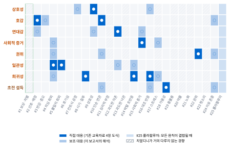
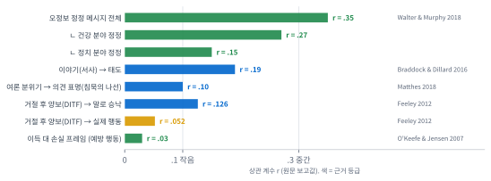
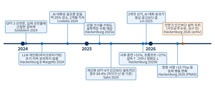
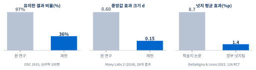
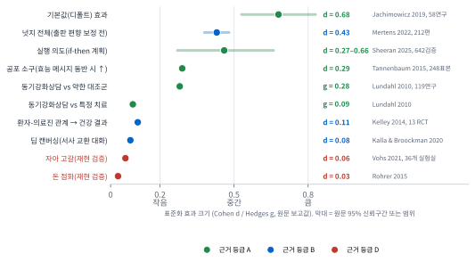
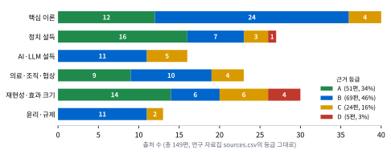

치알디니 7원칙과 멍거 25경향을 최신 설득과학(2023~2026년 AI 설득 연구 포함)과 엮고, 근거 등급(A~D)으로 걸러 병원·사업·정치 현장의 판단 기준으로 옮겼습니다. 인용 출처 155편 중 내부 자료 1편 포함.
반드시 기억해야 할 것 7
1
팩트 게이트가 리더와 사기꾼을 가른다. 사실 없는 설득은 사기·선동으로 흐르기 쉽다. 출처·날짜·등급을 통과한 사실만 다듬어 전한다. 해석
2
하수·중수·고수 하수는 팩트 없이 말하고, 중수는 팩트보다 설득에 기대고, 고수는 팩트 위에서 설득해 행동과 결과를 만든다. 해석
3
태도는 팩트가, 행동은 설계가 바꾼다. 행동은 구체적 요청 하나와 if-then 실행 계획(d 0.27~0.66)으로 만든다. A
4
“거절하셔도 됩니다”(BYAF) 거절할 자유를 밝히면 승낙 승산이 약 2배(OR 2.03)다. 환자 결정권을 지키는 정직한 기법. B
5
반복은 힘이자 위험이다. 반복하면 참처럼 느껴진다(51연구 메타분석). 그래서 확인된 사실만 반복한다. A
6
롤라팔루자는 구조로 막는다. 여러 경향이 한 방향으로 겹칠 때 체크리스트·숙고 시간·2인 확인으로 끊는다(수술 체크리스트 사망 1.5→0.8%, 도입 전후 비교). B
7
의료법이 먼저다. 치료 후기·경험담은 홍보물에 쓰지 않는다(§56②). 결정 전에 비급여 항목과 비용을 알리고(§45), 급여 본인부담을 포함한 예상 총액도 안내한다(원내 원칙).
한눈에 보기: 팩트 → 심리 → 행동 → 결과
인포그래픽의 숫자는 모두 본문에서 출처와 함께 다룬 값이다(초록 기준). 등급 A~D는 근거의 단단함. 자세한 근거는 2쪽 요약과 각 장.
Spine Center / 직원 역량 강화 · 기존 교육자료 「설득과 오판」(2026-10)의 심화판정보 제공용 교육자료 · 특정 진료·투자·투표를 권하지 않음
NDB 설득의 심리학 | 심층보고서1 / 30
NDB 설득의 심리학 · 사실 위에 세우는 영향력한 장 요약
0한 장 요약
결론
행동·정체성·반복에서는 심리가 강하고, 태도를 바꾸는 것은 사실이다. 그래서 사실을 먼저 확인하는 팩트 게이트가 리더와 사기꾼을 가른다.
대표님 원칙(“팩트 없이 설득만 하면 사기꾼, 팩트에 기반해 설득하면 사업가·학자·정치인”)은 연구로 대체로 지지된다. 다만 “정치는 팩트보다 심리”라는 앞부분은 행동·정체성·반복에 한정할 때 맞다. 해석
핵심 명제 5개
#
명제
근거 (등급)
1
태도를 바꾸는 주된 엔진은 정보다. AI 설득 실험에서도 설득력은 사실 주장의 양과 배치에서 나왔고, 사실을 빼면 효과가 사라졌다. 사실
Science 2025 7.7만 명 실험 [1]B · 미게재 원고 [2]C · 선거 대화 실험 [3]B
2
그러나 설득력을 끌어올린 방법은 정확도를 떨어뜨렸다. 사실 밀도와 정확성은 맞바꾸는 관계다. 그래서 설득을 다듬은 뒤에는 반드시 사실을 다시 검사해야 한다. 사실→해석
사후 훈련 +51%, 프롬프트 +27%, 정확도 하락 초록 기준[1]B
3
행동은 태도와 따로 움직인다. 청원 서명이 19.7%p 늘었지만 태도 효과와 행동 효과는 상관이 없었다. 행동은 쉬운 다음 단계, 약속, 계획으로 설계한다. 사실
PNAS 2026 [4]B, 실행 의도 d 0.27~0.66 [5]A
4
심리 기법만으로 하는 캠페인의 효과는 작다. 본선거 막판 접촉 효과는 평균 0, 넛지는 현장에서 학술지의 약 6분의 1. 반복과 정체성 자극은 강하지만, 그것이 사기꾼의 무기이기도 하다. 사실
49개 현장 실험 [6]A, 126개 RCT [7]A, 반복 진실 효과 [8, 9]A
5
병원에서 가장 강한 설득은 구조와 대화다. 기본값(d 0.68), 동료 비교 피드백, 체크리스트, 결정 보조 도구, 동기강화상담, 되말하기(티치백), “선택은 당신의 몫”이라는 자율 존중. 사실
[10, 11, 12, 13, 14, 15]AB
NDB가 이번 분기에 바로 할 일
① 팩트 게이트
환자 안내문·홍보물·상담 대본의 모든 수치에 출처와 날짜를 붙이고, 고친 뒤 한 번 더 사실 확인. 해석
② 상담 표준
수술 설명에 결정 보조 자료 + 티치백 + “결정은 환자분이 하십니다”를 넣는다 (11장 체크리스트). 해석
③ 방어 교육
의료기기·제약 영업 전술 5가지를 미리 보여주는 접종 교육과, 경제적 이익 수수 금지 규정 재확인. 해석
이 보고서를 읽는 법
주장 표시: 사실 출처로 확인된 내용 · 해석 사실을 바탕으로 한 이 보고서의 판단 · 추정 근거가 약한 예상 · 자료 내용 기존 교육자료·연구 자료집·책의 내용을 옮긴 것
근거 등급: A 메타분석 또는 대규모 재현 · B 연구 여러 개, 조건 따라 다름 · C 연구 적음·논쟁 중·실무 모델·동료심사 전 · D 재현 실패(쓰지 말 것)
수치 표시: 초록 기준 논문 초록에서 확인한 값 · 자료집 수치·초록 미확인 연구 자료집 수치로 초록에서 확인하지 못한 값 · 미게재 원고 동료심사 전 원고
NDB 설득의 심리학 | NDB 심층보고서2 / 30
NDB 설득의 심리학 · 사실 위에 세우는 영향력핵심 발견 7
0핵심 발견 7가지: 기존 교육자료에 없던 것
연구 자료집(출처 149편)에서 추린 7가지입니다. 각 발견이 어느 원칙을 고치거나 넓히는지 주황색 표시로 붙였습니다.
1
사실 밀도와 정확성은 맞바꾼다
+51% / +27%
AI 19종·76,977명·707개 쟁점. 사후 훈련과 프롬프트가 설득력을 각각 최대 51%, 27% 높였지만, 설득력을 올린 곳에서 사실 정확도는 체계적으로 떨어졌다 초록 기준. 사실[1]B
설득력 ↑
정확도 ↓ (막대는 방향만 나타낸 개념도)
권위 · 팩트 게이트
2
태도와 행동은 따로 움직인다
+19.7%p
AI 대화가 실제 청원 서명을 19.7%p 늘렸지만, 태도 효과와 행동 효과 사이에 상관이 없었다. 정보 제공은 태도는 움직였지만 행동에는 가장 작은 효과를 냈다 초록 기준. 사실[4]B
일관성 · 행동 설계
3
막판 접촉 ≈ 0, 깊은 대화는 오래간다
0 vs 3개월+
본선거 현장 실험 49개의 평균 설득 효과는 0 초록 기준[6]A. 상대의 관점을 묻는 10분 대화는 편견을 3개월 이상 줄였고 [16], 논증만 한 대화는 효과가 없었으며 이야기 교환이 들어가야 효과가 났다(d=0.08) 초록 기준[17]B. 사실
연대감 · 이야기
4
지지층과 반대층이 같은 방향으로 움직인다
평행 설득
정보를 받으면 진영과 관계없이 비슷한 방향·크기로 움직인다 [18, 19]. 정정하면 믿음이 더 굳어진다는 ‘역효과’는 대규모 재현에서 거의 나오지 않았다. 원 연구는 D[20, 21, 22, 23]. 사실
권위 · 일관성 방어
5
반복은 진실처럼 느끼게 만든다
아는 것도 흔든다
51개 연구 메타분석에서 반복된 문장은 더 참으로 평가됐다 [8]A. 정답을 아는 사람에게서도 나타났고 [9], 반복 횟수가 늘수록 로그 곡선으로 커졌다 [24]. 사실 거짓을 반박할 때도 거짓 문장을 되풀이하지 말 것. 해석
사회적 증거 · 주의
6
넛지·손실 프레임은 과장됐다, 동료 비교는 통했다
8.7%p → 1.4%p
학술지 넛지 평균 8.7%p가 정부 넛지팀 126개 RCT에서는 1.4%p 초록 기준[7]. 출판 편향을 보정하면 증거가 없다는 분석도 있다 [25]. 이득·손실 프레임 차이는 r=.03 [26]. 반면 “지역 의원 80%보다 많이 처방” 편지는 항생제 처방을 대조군보다 3.3% 줄였다(상대 감소) [11]A. 사실
자아 고갈은 36개 실험실 사전등록 검증에서 d=0.06 [27], 돈 점화는 d=0.03 [28], 노인 단어 점화는 실험자 기대가 있을 때만 재현됐다 [29]. 사실
OR 2.03
요청 끝에 “물론 거절하셔도 됩니다”를 붙이면 42개 연구(22,333명)에서 승낙 승산비 2.03, r=.13 (원문 확인). 대부분 프랑스 연구이고, 즉석 결정이 아닐 때는 효과가 줄었다. 승산비라서 ‘확률 2배’와는 다르다. 사실[15]B (자료집 등급은 A. 적용 범위가 좁아 이 보고서는 B로 낮춤)
초전 설득 수정희귀성(반발) 방어
한계: 7개 발견의 표본은 대부분 미국·영국·서유럽이다. 한국에서 같은 크기로 재현된다는 보장은 없다. 추정
NDB 설득의 심리학 | NDB 심층보고서3 / 30
NDB 설득의 심리학 · 사실 위에 세우는 영향력차례
·차례와 이 보고서의 방법
0
한 장 요약 · 핵심 발견 7가지
6
재현성 점검표: 굳건한 결과와 무너진 결과
1
대표님 원칙: 사실 × 설득 2×2, 찬반 증거, 하수·중수·고수
7
설득 설계의 8단계
2
뇌의 두 경로: 시스템 1·2, 중심·주변 경로
8
병원 적용: 상담 · 직원 · 영업 방어 · 환자 안전
3
치알디니 7원칙 심화
9
사업·정치 적용: 2×2로 읽는 사례
4
멍거 25경향과 롤라팔루자
10
윤리: 탐정과 밀수꾼, TARES, 다크 패턴
5
교육자료 너머의 최신 과학 (AI 설득 포함)
11
실전 도구: 설득 설계 캔버스 · 방어 체크리스트
기존 교육자료와 무엇이 다른가
항목
기존 「설득과 오판」(16쪽)
이 심층보고서
중심 질문
설득 원칙과 오판 경향은 어떻게 연결되는가
사실과 설득은 어떻게 결합해야 오래가는 영향력이 되는가 (대표님 원칙)
근거 수준
고전 실험 수치 중심 (예: 16.7%→50%, 17%→76%)
모든 주장에 A~D 등급, 효과 크기, 재현 여부 표시. 고전 단일 연구는 ‘사례’로 낮춤
범위
치알디니·멍거, 병원 현장
+ ELM, 전망이론, 넛지, 접종, 서사, 도덕 재구성, 동기화된 추론, 선거 실험, AI 설득 2023~2026
적용
환자 안전·상담·조직
+ 동기강화상담·공유 의사결정·티치백·설명 동의 법조문, 영업 방어, 사업·정치 분석
도구
개인 점검 체크리스트
+ 설득 설계 캔버스, 윤리 판정 순서도, 다크 패턴·방어 체크리스트 (인쇄용)
방법과 한계
어떻게 확인했나
원천: 연구 자료집(dossier.md, sources.csv 149편, 2026-10-25 작성)과 기존 교육자료 PDF 16쪽 전부. 자료 내용
모든 DOI를 Crossref·OpenAlex·PubMed로 다시 조회해 제목·연도가 맞는지 확인했다. 법령·판결·보도자료는 원문 페이지로 확인했다. 사실
효과 크기는 초록이나 원문에서 확인한 값만 숫자로 썼다. 자료집에만 있고 초록에서 못 찾은 값은 자료집 수치·초록 미확인으로 표시했다.
알고 읽어야 할 한계
표본 대부분이 미국·영국·서유럽(WEIRD)이다. 집단주의 문화일수록 동조가 강하다는 메타분석이 있어 [30], 한국에서는 사회적 증거·연대감의 크기가 다를 수 있다. 추정
동료심사 전 원고 4편은 C미게재 원고: [2, 31, 32, 33].
많은 효과 크기가 초록 기준이다. 원문 표와 다시 대조하면 바뀔 수 있다.
멍거 25경향은 실험으로 검증된 분류가 아니라 실천가의 점검 목록이다 [34, 35]. 자료 내용
NDB 설득의 심리학 | NDB 심층보고서4 / 30
NDB 설득의 심리학 · 사실 위에 세우는 영향력1 대표님 원칙
1대표님 원칙: 사실 × 설득
결론: 오래가는 영향력은 오른쪽 위 칸(사실 있음 × 설득력 있음)에서만 나온다. (그림 1) 사실 없는 설득은 처음엔 이기지만 검증 앞에서 무너지고, 설득 없는 사실은 옳지만 늦게 도착한다. 해석
대표님 원칙“정치는 팩트보다 심리(설득심리학)이고, 학자·기자·과학자는 심리보다 팩트다. 팩트 없이 설득만 하면 사기꾼이고, 팩트에 기반해 설득하면 사업가·학자·정치인이다.” 자료 내용
그림 1. 사실 × 설득 2×2 매트릭스. 점선 화살표는 시간이 지나며 생기는 이동. 해석대표님 원칙을 이 보고서가 도식화
네 칸을 가르는 질문
세로축(사실): 내 주장의 근거를 상대가 확인할 수 있는가? 출처·날짜·불확실성을 밝혔는가?
가로축(설득): 상대가 주의를 기울이고, 이해하고, 기억하고, 행동할 수 있게 전달했는가?
두 축은 서로 독립이다. 학자형이 사실을 더 쌓는다고 리더가 되지 않고, 선동가가 말을 더 잘한다고 리더가 되지 않는다. 해석
병원에서 네 칸의 모습
리더: 실제 결과와 대안을 보여주고, 환자 말로 되묻고, 결정을 맡긴다.
학자형: 정확하지만 전문 용어뿐인 설명. 환자는 고개만 끄덕인다.
사기꾼: “이번 달만”, “다들 이걸로 해요”, 근거 없는 완치 약속.
무존재: 준비 없이 들어간 회의, 결론 없는 보고서. 해석
NDB 설득의 심리학 | NDB 심층보고서5 / 30
NDB 설득의 심리학 · 사실 위에 세우는 영향력1 대표님 원칙
원칙을 연구로 점검: 찬성 증거 3 · 반대 증거 3
결론: 행동·정체성·반복에서는 심리가 강하고, 태도를 바꾸는 것은 사실이다. (그림 2) 그래서 사실을 통과시킨 뒤에만 설득을 허용하는 팩트 게이트가 사기꾼과 리더를 가르는 기준이 된다. 해석[1, 4, 8]
그림 2. 찬반 증거의 균형. 심리는 행동·정체성·반복 쪽에서, 사실은 태도·믿음·정정 쪽에서 무게가 실린다. 해석연구 자료집 2장과 원 논문 초록을 바탕으로 작성
찬성: “심리가 팩트보다 강하다”
반복이 진실감을 만든다. 메타분석 51연구, 아는 사람에게도 작동, 반복 횟수에 따라 커짐. 사실[8, 9, 24]A
정체성과 감정이 먼저 움직인다. 미국 유권자는 상대 당 사람을 점점 더 싫어하며, 이 감정은 정책 태도와 일관되게 연결되지 않는다 [36, 37]. 정치 쟁점에서는 수리 능력이 높을수록 오히려 더 갈라졌다는 연구도 있다 [38]C. 사실
행동은 정보로 잘 움직이지 않는다. AI 실험에서 정보 전략은 행동 효과가 가장 작았다 [4]. 동료·이웃 비교 같은 사회 규범이 현장 행동을 바꿨다 [11, 39, 40]. 사실
반대: “팩트는 약하다”는 통념에 반하는 증거
사실이 설득의 엔진이다. AI 설득의 기제는 정보의 빠른 배치였고 [1], 선거 대화에서도 AI는 “정교한 심리 기법이 아니라 관련 사실과 증거로” 설득했다 [3]. 반박 증거 없이 설득하게 하자 효과가 사라졌다 미게재 원고[2]. 사실
사람은 반대 진영 정보에도 같은 방향으로 움직인다. 역효과는 드물다. 당 지도자가 반대 신호를 보내도 논거 수용은 줄지 않았다. 사실[18, 19, 21, 22]A
심리 기술 중심 캠페인은 효과가 작다. 막판 접촉 ≈0 [6], 광고 효과도 대상과 관계없이 작음 [41], 네거티브는 득표에 효과적이지 않고 정치 신뢰만 조금 낮춤 [42], LLM 맞춤 메시지의 추가 이득은 유의하지 않음 [43]. 사실
2×2로 읽는 실제 사례 3개
칸
사례
무엇이 일어났나
교훈
리더
영국 최고의료책임자의 동료 비교 편지 (2014)
항생제 처방 상위 20% 의원 의사에게 “같은 지역 의원 80%보다 많이 처방한다”는 실제 데이터 편지 → 처방 3.3% 감소(대조군 대비 상대 감소), 약 73,406건 감소 추정 초록 기준사실[11]
사실(실제 데이터) + 권위 + 사회적 증거가 한 방향. 해석
사기꾼
테라노스 (미국 연방법원)
배심은 2022년 1월 투자자 사기 4개 혐의 유죄 평결(환자 관련 혐의는 무죄), 법원은 2022-11-18 징역 135개월 선고. 법무부에 따르면 제약사 로고를 붙인 보고서로 검증을 받은 것처럼 투자자를 오도했다. 사실[44]
권위(로고·이사진)와 희소성으로 만든 설득은 검증 앞에서 무너진다. 해석
학자형
제멜바이스 (19세기 빈)
손 씻기로 산욕열 사망을 줄인 관찰이 있었지만 동료들을 설득하지 못했고 실천은 오래 늦어졌다. 사실[45]
맞는 사실도 전달 설계가 없으면 환자를 지키지 못한다. 해석
NDB 설득의 심리학 | NDB 심층보고서6 / 30
NDB 설득의 심리학 · 사실 위에 세우는 영향력1 대표님 원칙
하수 · 중수 · 고수: 설득의 세 단계
결론: 고수는 팩트 위에서 설득해 행동과 결과를 만든다. 심리 기술만 쓰면 반짝 효과는 나도 검증 앞에서 무너지는 중수에 머문다. 2×2(그림 1)로 보면 고수만 오른쪽 위 ‘리더’ 칸에 선다. 해석
대표님 원칙“하수는 팩트 없이 말하고, 중수는 팩트보다 설득에 기대고, 고수는 팩트 위에서 설득해 행동과 결과를 만든다.”
단계
무기
남는 것
지속성
하수
말뿐
남는 것 없음
금방 들통
중수
심리 기술
일시적 호감 · 반짝 행동
검증 시 붕괴
고수
팩트 + 심리 + 행동 설계
신뢰 · 행동 · 결과
반복될수록 강해짐
표는 대표님 원칙을 정리한 것이다. 해석 2×2와 겹쳐 보면 하수는 ‘무존재’, 중수는 ‘사기꾼·선동가’ 칸에 가깝고, 고수가 ‘리더’다. 해석
고수의 4단계
1팩트 쌓기
확인 가능한 근거(출처·날짜·불확실성)부터 모은다. AI 설득 실험에서도 설득력의 엔진은 사실 주장이었다 [1]. 사실
→
2심리로 전달
쉬운 말, 이야기, 동료 비교처럼 사람이 받아들이는 형식에 담는다. 동료 비교 편지는 처방을 대조군보다 3.3% 줄였다(상대 감소) [11]. 사실
→
3행동 설계
구체적 요청 하나, if-then 실행 계획(d 0.27~0.66) [5], 그리고 “거절하셔도 됩니다”(BYAF) [15]. 사실
→
4결과로 증명
결과를 재고 공개해 다음 설득의 팩트로 쓴다. 반복될수록 신뢰가 쌓인다. 해석
척추 수술 상담에서 세 단계의 말
하수: “수술하면 다 좋아집니다.”
중수: “이번 달 안에 하셔야 해요. 다들 이걸로 하세요.”
고수: “검사에서 이 부분이 보입니다. 선택지는 세 가지이고 각각 좋아질 가능성과 남을 수 있는 증상은 이렇습니다. 결정은 환자분이 하시고, 오늘은 걷기 계획만 함께 적어 보시죠.”
문장은 교육용 예시다. 해석
고수가 지키는 선
팩트 게이트를 먼저 통과한 메시지만 다듬는다(차례의 방법, 10장 윤리).
행동 요청은 하나로 좁히고, 거절할 자유를 함께 말한다.
결과가 기대와 다르면 그 결과도 공개한다. 그래야 다음 설득의 팩트가 된다.
해석
NDB 설득의 심리학 | NDB 심층보고서7 / 30
NDB 설득의 심리학 · 사실 위에 세우는 영향력2 뇌의 두 경로
2뇌의 두 경로
결론: 결정이 중요할수록 사람은 논거의 질을 따지고, 덜 중요할수록 단서를 따른다. (그림 3) 그래서 수술·계약·투표 같은 큰 결정에서는 사실이, 안내문·첫인상 같은 작은 결정에서는 단서가 더 크게 작동한다. 사실[46, 47]
그림 3. 두 경로 도식: 시스템 1·2와 ELM의 중심·주변 경로. 해석Petty & Cacioppo 1986, Kahneman 2003을 바탕으로 작성
시스템 1과 시스템 2
빠르고 자동적인 직관(시스템 1)과 느리고 노력이 드는 추론(시스템 2)을 나누는 틀이다 [48, 49]. 치알디니의 ‘찰칵, 윙(click, whirr)’(녹음기처럼 단서 하나에 자동 재생되는 반응)와 멍거의 ‘표준적 오작동’은 둘 다 시스템 1이 단서 하나로 결론을 내리는 모습이다 [35]. 자료 내용
정교화 가능성 모델(ELM)의 핵심 실험
대학생에게 졸업시험 도입 주장을 들려주었더니, 자기 일이라 느낀 집단은 논거가 강한지 약한지로 태도가 갈렸고, 남의 일이라 느낀 집단은 화자가 전문가인지로 태도가 갈렸다. 사실[46, 50]B 관여도가 낮을 때는 호감 가는 화자가, 높을 때는 논거의 수가 이겼다. 사실[47]
병원에서 쓰는 법
상황
관여도
설계
척추 수술 여부 상담
높음
절대 위험 수치, 대안, 반대 근거까지. 양면 반박 메시지가 일면 메시지보다 신뢰·설득 모두 높다 [51]A
대기실 안내문, 문자
낮음
짧고 쉬운 문장, 신뢰할 출처 한 줄, 기본값·알림
직원 공지
중간
결론 한 줄 + 이유(왜) + 근거 링크
통합 포인트: 들키는 조작은 역효과
사람은 설득 시도를 알아차리면 대처 전략을 꺼낸다(설득 지식 모델) [52]. 자유를 위협받는다고 느끼면 분노와 반론이 함께 일어난다(심리적 반발) [53, 54]. 반대로 “선택은 당신의 몫”이라고 밝히면 승낙이 늘었다 [15]. 사실 → 주변 경로를 쓰더라도 숨기지 않을 수 있는 단서만 쓴다. 해석
수면자 효과 주의
신뢰도 낮은 출처의 메시지가 시간이 지나 더 설득적이 되는 현상은 특정 조건(강한 논거, 메시지 뒤에 나온 할인 단서)에서만 나타났다 [55]A. 사실 출처를 잊고 내용만 남는 순간을 대비해, 사실 확인을 메시지 본문에 넣는다. 해석
NDB 설득의 심리학 | NDB 심층보고서8 / 30
NDB 설득의 심리학 · 사실 위에 세우는 영향력3 치알디니 7원칙
3치알디니 7원칙 심화
결론: 7원칙은 모두 실재하지만, 고전 실험의 큰 숫자는 현장에서 작아진다. (그림 4) 원칙은 ‘사실을 전달하는 손잡이’로만 쓰고, 효과를 약속하는 공식으로 쓰지 않는다. 해석
관계와 신뢰 구축
상호성 · 호감 · 연대감
불확실성 해소
사회적 증거 · 권위
즉각적 행동 촉발
일관성 · 희귀성
상호성B
받으면 갚아야 한다는 규범. 양보에는 양보로.
말 승낙 r=.126, 실제 행동 r=.052 (거절 후 양보) [56]
호감B
좋아하고 비슷한 사람의 말은 덜 따진다.
관여도 낮을 때만 호감 효과, 높으면 논거가 이김 [47]
연대감B
“우리 중 하나”라는 공유 정체성. 2021년 추가된 7번째 원칙.
함께 움직이기(동기화) 메타분석: 친사회 행동 증가 [57, 58]
사회적 증거A
불확실할 때 비슷한 다수를 따른다.
동료 비교 편지 → 항생제 처방 3.3% 감소(상대 감소) [11]
권위B
전문성의 기표(직함·가운)에 검증을 멈춘다.
2006년 부분 재현에서도 복종률은 1963년보다 약간 낮을 뿐 [59]
일관성B
말하고 행동한 것과 일치하려 한다.
작은 요청→큰 요청: 조건에 따라 효과 없거나 역효과 [60]
희귀성B
잃을 수 있다는 감각과 자유를 되찾으려는 반발.
가짜 희소성 등 순한 다크 패턴만으로 가입 2배 이상 [61]
+ 자율 존중 (BYAF)B
교육자료에 없던 기법. “물론 거절하셔도 됩니다.” 42개 연구에서 승낙 승산비 2.03.
원문 확인 [15]
그림 4. 7원칙 아이콘 카드: 한 줄 기제, 이 보고서의 근거 등급, 대표 근거. 세 기둥 분류는 기존 교육자료를 따름. 자료 내용해석
세 기둥: 7원칙은 관계를 만들고, 불확실성을 줄이고, 행동을 촉발하는 세 묶음으로 나눌 수 있다 [35, 57]. 자료 내용 등급은 원칙 자체가 아니라 ‘원칙을 뒷받침하는 현재 증거’에 매긴 것이다. 같은 원칙도 결과 지표(말로 한 승낙 대 실제 행동)에 따라 등급이 달라진다. 해석
NDB 설득의 심리학 | NDB 심층보고서9 / 30
NDB 설득의 심리학 · 사실 위에 세우는 영향력3 치알디니 7원칙
7원칙 진단표 ①: 관계와 불확실성
결론: 상호성·호감·연대감·사회적 증거는 정직하게 쓰면 협력과 순응을 높이지만, 같은 손잡이가 영업 전술로 우리에게 쓰인다.해석
원칙 · 메커니즘
근거 · 효과 크기 (등급)
병원 예시 (탐정)
오용 신호 (밀수꾼)
방어법
상호성
받은 호의·양보를 갚으려는 보편 규범. 호감과 무관하게 작동
콜라를 받은 사람이 복권을 더 샀다 [62]자료집 수치·초록 미확인C. 거절 후 양보는 말 승낙 r=.126, 실제 행동 r=.052 [56, 63]B. 업체 식사 1회만 받아도 해당 약 처방 비율이 높았다(승산비 1.18~2.18, 횡단 연관) [64]B사실
타 부서 일을 먼저 돕는다. 환자에게 조건 없는 교육 자료
원치 않는 선물 뒤 즉답 요구, “특별히 깎아 드린” 연출
선물을 ‘판매 전술’로 다시 이름 붙이기. 받은 것과 결정을 분리해 기록
호감
좋아하는 사람·비슷한 사람의 제안을 덜 따짐
관여도 낮을 때만 화자 호감 효과 [47]B. 관계의 질 → 건강 결과 d=0.11 [65], 공감 상담이 통증·불안을 조금 줄임(SMD −0.18) [66]초록 기준B사실
이름 부르기, 진짜 공통점, 공감 표현
꾸민 유사성, 과한 칭찬 직후 계약
“이 제안을 낯선 사람이 했다면?” 사람과 제안을 분리
연대감
‘우리’라는 공유 정체성(혈연·지역·함께 행동)
2021년 개정판에서 7번째 원칙으로 추가 [57]. 동기화의 친사회 효과는 작은~중간 [58]자료집 수치·초록 미확인B. 조언을 구하면 유능해 보인다(단일 논문) [67]C사실
“같은 환자를 보는 한 팀”, 의견 대신 조언 구하기
가짜 ‘우리’(동향·동문 강조로 검증 회피), 외집단 적대
“우리”가 나오면 증거 질문을 한 번 더
사회적 증거
불확실할 때 비슷한 다수를 정답으로 간주
‘이 방 투숙객 다수’ 규범이 환경 호소보다 효과 [68](B, 크기는 종합 분석에서 이견 [69]). 동료 비교 편지 → 처방 3.3%↓(상대 감소) [11], 세금 납부↑ [39]A. 집단주의 문화일수록 동조↑(133연구) [30]A사실
실제 손위생 준수율·만족도 데이터 게시(홍보물이면 다른 의료기관 비교·과장·중요 정보 누락 금지, 의료법 제56조 제2항 · 사전심의 대상 여부 확인, 제57조 [70])
조작 후기, “다들 이걸로 해요”, 가짜 대기 인원
누가 ‘다수’인가, 나와 비슷한가, 검증 가능한가
치알디니: 의견 대신 조언을 구하라
“의견을 주세요”는 상대를 평가자로, “조언을 주세요”는 공동 창작자로 만든다 [35]자료 내용. 실험 근거는 ‘조언을 구하는 사람이 더 유능해 보인다’는 단일 논문 수준이다 [67]C. 부서 간 협조 요청, 새 프로토콜 도입 때 비용 없이 시도할 수 있다. 해석
업체 영업과 상호성: 법이 먼저 막는다
의료법 제23조의5는 의료인·의료기관 종사자가 의약품·의료기기 판매 촉진 목적의 금전·물품·향응 등 경제적 이익을 받는 것을 금지한다(견본품·학술대회 지원 등 보건복지부령 범위의 예외 있음). 사실[71] 작은 호의도 처방과 연관됐다는 연구가 있으므로 [64], 규정 안의 호의라도 기록하고 결정과 분리한다. 해석
NDB 설득의 심리학 | NDB 심층보고서10 / 30
NDB 설득의 심리학 · 사실 위에 세우는 영향력3 치알디니 7원칙
7원칙 진단표 ②: 행동 촉발
결론: 권위·일관성·희귀성은 행동을 빠르게 만들지만, 그 속도가 바로 위험이다. 병원은 이 세 원칙을 ‘속도를 늦추는 장치’와 함께 쓴다. 해석
원칙 · 메커니즘
근거 · 효과 크기 (등급)
병원 예시 (탐정)
오용 신호 (밀수꾼)
방어법
권위
전문성의 외적 기표(직함·의복·장식)에 검증 정지
40명 중 26명이 최고 전압까지 [72], 2006년 부분 재현도 약간 낮을 뿐 [59]B. 출처 신뢰도는 대체로 효과가 있지만 조건에 따라 역전 [73]B사실
실제 전문 분야·경력 소개, 투 챌린지 규칙
무관한 직함·가운·수상 경력 나열, 유명인 추천
두 질문: 이 분야 전문가인가? 이해관계 없이 정직한가?
일관성
공개한 입장·자아상과 일치하려는 압력
작은 요청→큰 요청 [74], 조건에 따라 효과 없거나 역효과 [60]B. 예약 카드 직접 작성 등으로 노쇼 감소 [75]자료집 수치·초록 미확인C. if-then 실행 의도 d 0.27~0.66, 642검증 [5]A사실
재활 목표를 환자 말로 쓰기, if-then 계획
로우볼(미끼 조건 후 변경), 작은 동의를 쌓아 큰 계약
“처음으로 돌아가도 같은 선택을 할까?”
희귀성
잃을 수 있다는 감각 + 제한된 자유 회복 욕구(반발)
갑자기 줄어든 쿠키를 더 가치 있게 평가 [76]C. 쇼핑몰 약 1.1만 곳에서 다크 패턴 1,818건 [77]. 순한 다크 패턴만으로 가입 2배 이상, 공격적이면 거의 4배 [61]초록 기준B사실
실제 제한(수술 일정, 보험 기준 변경)을 정확한 날짜와 함께. 사실 고지만 하고 환자 결정을 재촉하는 데 쓰지 않음
“이번 달만 이 가격”, 가짜 카운트다운
마감이 없어도 지금 결정할까? 하루 숙고
새로 더할 원칙: 자율 존중(BYAF)
“검사 여부는 환자분이 정하시면 됩니다. 다만 근거는 이렇습니다.” 요청 끝에 거절할 자유를 밝히면 42개 연구(22,333명)에서 승낙 승산이 약 2배(승산비 OR 2.03, r=.13)였다. 확률 2배와는 다르다. 표본은 대부분 프랑스였고, 즉석 결정이 아니면 효과가 줄었다. 사실[15]B 자료집은 A등급이지만 이 보고서는 적용 범위(프랑스·즉석 요청)가 좁아 B로 매겼다. 해석 반발을 줄이는 정직한 기법이라 탐정의 기본 문장으로 권한다. 해석
초전 설득(Pre-Suasion): 살릴 것과 버릴 것
메시지 직전에 주의가 쏠린 대상이 판단 기준이 된다 [78]C. 웹페이지 배경(구름·동전)이 제품 선택에 영향을 준 실험이 있다 [79]. 사실 그러나 ‘단어 하나로 행동이 바뀐다’는 식의 점화 연구는 재현에 실패했다 [28, 29]D. → 주의와 맥락 설계는 쓰고, 미묘한 점화 효과는 기대하지 않는다.해석
일관성을 정직하게 쓰는 if-then 대본
상황
환자와 함께 적는 문장 (환자의 말로)
요추 수술 후 걷기 재활
“만약 저녁 식사를 마치면, 나는 아파트 단지를 15분 걷는다.”
약 복용
“만약 아침에 양치를 하면, 나는 세면대 옆 약을 먹는다.”
다음 예약
환자가 예약 카드에 날짜를 직접 쓰고, “바뀌면 전화 주시겠어요?”에 “예”라고 답하게 한다. [75]자료집 수치·초록 미확인
근거: 실행 의도는 if-then 형식이고, 동기가 높고, 계획을 되뇔 때 효과가 컸다 초록 기준[5]. 시간 수치(15분 등)는 예시이며 처방이 아니다. 해석
NDB 설득의 심리학 | NDB 심층보고서11 / 30
NDB 설득의 심리학 · 사실 위에 세우는 영향력4 멍거 25경향
4멍거 25경향과 롤라팔루자
결론: 치알디니 원칙은 멍거 경향 가운데 약 12개를 겨냥한 손잡이이고, 나머지 경향(인센티브·부정·낙관·스트레스·노화 등)은 아무도 설득하지 않아도 스스로 빠지는 함정이다. (그림 5) 그래서 남을 경계하는 것만으로는 부족하고 구조가 필요하다. 자료 내용해석[34, 35]

그림 5. 치알디니 원칙(행) × 멍거 25경향(열) 대응 히트맵. 직접 대응은 NDB 교육자료 4장, 보조 대응은 이 보고서의 해석
히트맵 읽는 법
진한 파랑(●): 기존 교육자료 4장 도식의 직접 대응. 자료 내용
연한 파랑(○): 같은 회로가 함께 켜지는 보조 대응. 예: 권위는 의심 회피(#4)와 이유 존중(#24)을 함께 건드린다. 해석
빗금 열: 치알디니 원칙이 거의 닿지 않는 경향. 인센티브(#1), 부정(#11), 낙관(#13), 스트레스(#17), 용불용·약물·노화(#19~21), 헛소리(#23). 자료 내용
멍거에게만 있는 세 함정, 병원 대책
경향
병원 대책
#1 인센티브
새 지표마다 “이 숫자를 올리는 가장 쉽고 나쁜 방법은?”을 묻는다 (역발상)
#11 부정
내 합병증률을 데이터로 본다. 사례 검토 회의를 처벌 없이
#17 스트레스
새벽·연속 응급에는 판단 대신 체크리스트, 중요한 결정은 말로 한 번 더
대책은 기존 교육자료 6~7장을 요약한 것이다. 자료 내용
NDB 설득의 심리학 | NDB 심층보고서12 / 30
NDB 설득의 심리학 · 사실 위에 세우는 영향력4 멍거 25경향
롤라팔루자: 편향이 한 방향으로 정렬될 때
결론: 대형 사고는 한 가지 실수가 아니라 여러 경향이 같은 방향으로 겹칠 때 일어나므로, 고리 하나를 구조적으로 끊는 장치가 가장 싸고 강한 방어다. (그림 6) 자료 내용해석
그림 6. 롤라팔루자 증폭 도식: 다섯 경향이 한 방향으로 정렬되면 확인 절차가 생략된다. 체크리스트·타임아웃이 고리를 끊는다. 해석NDB 교육자료 5장 병원 사례를 도식화
근거: 고리를 끊는 장치는 효과가 있었다
8개 도시 8개 병원에서 19항목 WHO 수술 안전 체크리스트를 도입하자 사망률은 1.5%에서 0.8%로, 입원 중 합병증은 11.0%에서 7.0%로 줄었다 초록 기준. 사실[12]B 도입 전후 비교 연구라 다른 요인의 영향을 완전히 배제하지는 못한다. 해석
같은 원리가 성공 엔진도 된다
멍거는 코카콜라를 단순 연관(행복한 이미지), 습관, 사회적 증거, 낮은 단가가 한 방향으로 정렬된 건설적 롤라팔루자로 보았다 [34, 35]. 자료 내용 NDB에 옮기면: 실제 좋은 결과(사실) + 친절한 경험(호감) + 지역 공동체(연대감) + 쉬운 예약(넛지)이 같은 방향을 향하게 하는 것. 해석
디지털 롤라팔루자: 다크 패턴
결제 화면 한 장에 가짜 카운트다운(희귀성), 실시간 구매 알림(사회적 증거), 복잡한 해지(일관성·현상 유지)가 겹친다 [35]. 자료 내용 실험에서 순한 다크 패턴만으로 가입이 2배 이상, 공격적인 조합은 거의 4배가 됐고, 공격적 조합에는 소비자 반발이 있었지만 순한 조합에는 없었다 초록 기준. 사실[61] → 반발이 없는 ‘순한’ 조작이 더 위험하다. 해석
통합 점검 질문
지금 이 결정에 경향이 세 개 이상 같은 방향으로 걸려 있다면 멈춘다. 시간 압박 + 윗사람 지시 + 이미 투입한 준비 + “다들 했겠지” = 타임아웃 신호. 자료 내용
NDB 설득의 심리학 | NDB 심층보고서13 / 30
NDB 설득의 심리학 · 사실 위에 세우는 영향력5 최신 과학
5교육자료 너머의 최신 과학
결론: 최신 연구는 ‘기법’보다 ‘구조와 정보’가 더 강하고, 많은 기법의 효과가 생각보다 작다는 쪽으로 수렴한다. 11개 주제를 근거 등급과 NDB 적용으로 정리했다. 해석
5.1 일체감(Unity): ‘우리’의 힘B
2021년 개정판의 7번째 원칙. 비슷함을 넘어 ‘같은 정체성’(가족·지역·함께 행동)을 공유할 때 영향력이 커진다 [57]. 함께 같은 동작을 하는 동기화는 친사회 행동을 늘린다 [58]. 사실
NDB 적용 “남양주의 척추를 함께 지키는 팀”처럼 실제로 공유하는 정체성만 쓴다. 가짜 동향·동문 강조는 금지. 해석
5.2 사전 설득: 주의가 판단의 틀이 된다C
메시지 직전에 주의를 끈 것이 판단 기준이 된다 [78]. 웹페이지 배경 실험은 전문가와 초보자 모두에게 선택 차이를 냈다 [79]. 다만 미묘한 점화의 행동 효과는 재현되지 않았다 [29]. 사실
NDB 적용 상담 시작에 “오늘 결정할 것과 결정하지 않아도 되는 것”을 먼저 말해 주의를 사실로 모은다. 해석
5.3 손실 회피와 프레이밍A / 메시지 A
손실은 같은 크기의 이득보다 크게 느껴진다 [80, 81]. 19개국 4,099명 재현에서 17개 선택 문항 중 94%가 재현됐다 [82]. 손실 회피 계수 메타분석 평균 1.955(150편, 607개 추정치) 초록 기준[83]. 반론도 있다 [84]C. 그런데 건강 메시지에서 이득·손실 프레임의 설득력 차이는 예방 r=.03, 검진 r=−.04로 거의 없었다 초록 기준[26, 85]. 사실
NDB 적용 “수술 안 하면 잃는다” 식 공포 프레임으로 결정을 밀지 않는다. 같은 위험을 이득·손실 두 방향과 절대 수치로 함께 보여준다. 해석
5.4 넛지와 EAST기본값 A / 전체 B
넛지는 자유를 막지 않고 선택 환경을 바꾼다 [86]. EAST = 쉽게·끌리게·사회적으로·제때 [87]. 기본값 효과 d=0.68(58연구) [10]. 넛지 전체 d=0.43 [0.38, 0.48](212편·효과 447개) 초록 기준[88]이지만 출판 편향 보정 시 증거가 없다는 반론 [25], 현장 규모 1.4%p [7]. 문자 넛지 19종 대형 실험에서 평균 5% 증가, “백신이 예약되어 있다” 문구가 가장 좋았다 [89]. 예측·의도 실험에서 좋았던 문구가 현장에선 통하지 않기도 했다 [90]. 사실
NDB 적용 예약 문자에 “○○님 앞으로 ○일 ○시 진료가 예약되어 있습니다”. 기본값은 환자 이익과 일치할 때만. 반드시 우리 병원에서 A/B로 시험. 해석
행동 모델 한 줄
행동 = 동기 × 능력 × 촉발이 같은 순간에 맞아야 일어난다는 포그 모델은 설계용 실무 모델이다 [91]C. 사실 환자가 운동을 안 하면 동기보다 먼저 ‘능력(쉬운가)’과 ‘촉발(언제 떠올리나)’을 점검한다. 해석
NDB 설득의 심리학 | NDB 심층보고서14 / 30
NDB 설득의 심리학 · 사실 위에 세우는 영향력5 최신 과학
설득에 저항하는 마음, 이야기와 가치
결론: 사람은 생각보다 정보에 반응하지만, 정체성이 위협받으면 같은 사실도 들리지 않는다. 그래서 사실의 ‘포장’을 상대 가치와 이야기로 바꾸되 내용은 바꾸지 않는다. 해석
5.5 접종 이론과 프리벙킹A / 게임형 C
약한 공격과 반박을 미리 보여주면 면역이 생긴다 [92]. 54건 메타분석에서 지지 메시지·무처치보다 우수했고, 2주 뒤부터 효과가 줄었다 [93]. 짧은 영상 5편이 조작 기법 식별력을 높였고 유튜브 현장 연구(22,632명)에서도 효과가 있었다 [94, 95]. 반론: 게임형 개입은 진짜·가짜 구별력보다 ‘다 가짜’라는 응답만 늘렸다 [96]. 사실
NDB 적용 영업 미팅 전 “오늘 쓰일 수 있는 전술 5가지” 1쪽 교육. 2주 이내 재교육. 의심이 아니라 구별을 훈련한다. 해석
5.6 이야기 몰입(서사 전이)A
이야기에 빠져들면 반론이 줄고 이야기와 일치하는 믿음이 생긴다 [97]. 132개 효과 크기 메타분석 [98]. 서사 노출과 태도 r=.19, 행동 r=.23(행동은 5연구) 초록 기준[99]. 통계 증거가 이야기보다 약간 낫다는 메타분석도 있다 [100]C. 사실
NDB 적용 실제 환자 사례(동의·비식별)는 원내 교육·상담 설명용으로만 쓰고 홍보물에는 쓰지 않는다(치료경험담 광고 금지, 의료법 제56조 제2항 [70]). 상담에서도 반드시 기저율(전체 중 몇 명)과 함께. 극단적 성공담 하나로 일반화하지 않는다(가용성 #18). 해석
5.7 도덕적 재구성B
진보는 배려·공정을, 보수는 충성·권위·순수까지 고르게 중시한다 [101]. 사람들은 자기 도덕 언어로 주장하지만, 상대의 도덕 언어로 바꾼 주장이 더 설득적이었다(6개 연구) [102, 103]. 사실
NDB 적용 같은 사실을 듣는 사람의 가치로: 원칙형 직원에게는 ‘규정·책임’, 관계형 직원에게는 ‘동료·환자 보호’의 언어로. 내용은 바꾸지 않는다. 해석
5.8 동기화된 추론과 정체성C~B
사람은 원하는 결론 쪽으로 증거를 평가한다 [104]. 정치 쟁점에서는 수리 능력이 높을수록 해석이 더 갈렸다 [38]C. 그러나 이 설계로는 인과를 단정하기 어렵다는 비판 [105], 당 지도자 신호에도 논거 수용이 줄지 않았다는 결과 [19]가 있다. 상대 당에 대한 감정을 줄여도 반민주 태도는 줄지 않았다 [106]. 사실
NDB 적용 정체성 위협이 클 때는 사실보다 먼저 판단 없는 경청. “틀렸다” 대신 “어떤 근거를 보셨어요?” 해석
NDB 설득의 심리학 | NDB 심층보고서15 / 30
NDB 설득의 심리학 · 사실 위에 세우는 영향력5 최신 과학
선거 연구가 가르쳐 주는 것
결론: 대규모 현장 실험에서 ‘심리 기술’로 표를 바꾸는 효과는 거의 0이고, 사람을 실제로 바꾼 것은 오래 걸리는 정직한 대화와 정보였다. (그림 7) 사실해석
5.9 딥 캔버싱: 판단 없는 이야기 교환B
유권자 501명의 집을 방문해 상대 입장에 서 보게 한 약 10분 대화가 트랜스젠더 편견을 3개월 이상 줄였다 [16]. 3개 현장 실험(6,869명)에서 논증만 한 대화는 효과가 없었고, 이야기 교환을 더한 대화는 4개월 이상 효과(d=0.08, 0.08, 0.04) 초록 기준[17, 107]. 사실
NDB 적용 변화에 저항하는 직원과의 면담: 설득보다 “비슷한 일을 겪은 적 있으세요?”로 서로의 경험을 먼저 나눈다. 해석
5.10 선거 접촉의 최소 효과와 평행 설득A
본선거 현장 실험 40개 메타분석 + 9개 신규 실험 모두 평균 효과 0. 예외는 아주 인기 없는 입장, 선거 훨씬 전 접촉(효과는 사라짐) 초록 기준[6]. 49개 광고·59개 실험(3.4만 명)에서 효과는 맥락·대상과 관계없이 작았다 [41]. 캠페인 자체 실험 146개(광고 617개)에서 무엇이 통할지 사전 예측이 어려웠다 [108]. 정보는 지지층·반대층을 같은 방향으로 움직였고 [18], 역효과는 드물었다 [21, 22]. 사실
NDB 적용 병원 홍보도 마찬가지: 막판 광고보다 평소의 실제 결과와 신뢰가 쌓인다. 문구는 짐작 말고 시험한다. 해석

그림 7. 상관 계수로 보고된 설득 효과 크기 (원문 초록 보고값). Walter 2018, Braddock 2016, Matthes 2018, Feeley 2012, O'Keefe 2007
반복: 사기꾼의 가장 강한 무기
반복된 말은 더 참처럼 느껴진다(51개 연구) [8]. 정답을 알아도 작동하고 [9], 횟수가 늘수록 커지다 둔화된다 [24]A. 공유 전에 “정확한가?”를 떠올리게 하면 허위 정보 공유가 줄었다 [109]B. 사실
정정하는 순서
정정은 효과가 있다(r=.35). 건강(r=.27)보다 정치(r=.15)가 어렵고, 일관된 설명을 주는 정정이 단순 사실 확인보다 낫다 [110]. 자세한 반박이 효과적이지만 오정보 잔존도 남는다 [111]. 사실 순서: 사실 → 오정보 경고 → 왜 틀렸는지 → 사실 다시 [112]자료집 수치·초록 미확인
NDB 설득의 심리학 | NDB 심층보고서16 / 30
NDB 설득의 심리학 · 사실 위에 세우는 영향력5 최신 과학 · AI
5.11 AI·LLM 설득 (2023~2026): 교육자료에 전혀 없던 영역
결론: AI는 사실을 많이, 빠르게 배치해 사람만큼 또는 사람보다 잘 설득할 수 있지만, 설득력을 키운 방법이 정확도를 떨어뜨렸다. (그림 8) AI 시대의 경쟁력은 설득 문장이 아니라 사실 검증 체계다. 사실해석

그림 8. AI·LLM 설득 연구 타임라인 (2024~2026). 주황 상자는 동료심사 전 원고. 각 논문 초록 기준
연구
핵심 결과 (초록 기준)
등급
Hackenburg 외, Science 2025
76,977명, 19개 모델, 707개 쟁점. 사후 훈련 최대 +51%, 프롬프트 +27%, 개인화·모델 크기는 작은 효과. 설득력을 올린 곳에서 사실 정확도 하락 [1]
B
Lin 외, Nature 2025
미국·캐나다·폴란드 선거. AI 대화 효과가 기존 영상 광고보다 큼. 관련 사실과 증거로 설득했지만 모두 정확하지는 않았고, 옹호한 후보 진영에 따라 부정확성 차이가 있었다 [3]
B
Hackenburg 외, PNAS 2026
14,779명. 청원 서명 +19.7%p 등 실제 행동 변화. 태도 효과와 행동 효과는 무상관. 정보 제공 전략은 행동 효과가 가장 작음 [4]
B
Costello 외, Science 2024
음모론 신봉자 2,190명. GPT-4 대화로 믿음 약 20% 감소, 2개월 지속 [113]. AI라고 밝히든 전문가라고 하든 효과 같음 [114]. 반박 증거 없이 설득하게 하면 효과 사라짐 미게재 원고[2]
B/C
Salvi 외, Nat Hum Behav 2025
900명 토론. 상대 정보를 가진 GPT-4가 인간보다 더 설득적이었던 경우 64.4%(차이가 난 쌍 기준) [115]
B
규모·맞춤의 한계
모델 크기 확대는 수확 체감 [116], LLM 마이크로타기팅 추가 이득 유의하지 않음 [43], 메타분석(7연구): LLM과 인간의 전체 차이 유의하지 않음, 이질성 큼 [117]
B/C
동료심사 전
전문가 인간·현장 모금원보다 설득 우위 [31], 진실·기만 양방향 모두 인간보다 설득적 [32], 기제 중심 위해 완화 틀 [33]미게재 원고
C
윤리 사건
취리히대 연구진이 동의 없이 레딧 토론방에서 AI 계정으로 실험해 비판을 받았다 [118]. 사실 사칭과 동의 없는 실험은 사실이 맞아도 밀수꾼의 영역이다. 해석
NDB가 AI 상담·안내 도구를 쓸 때
사실 밀도 + 출처 + “결정은 환자분이” 문구로 설계
설득력을 다듬은 뒤 반드시 정확도 재검사
AI 사용을 밝힌다(밝혀도 효과 유지 [114])
수술 권유 방향으로 최적화 금지 해석
NDB 설득의 심리학 | NDB 심층보고서17 / 30
NDB 설득의 심리학 · 사실 위에 세우는 영향력6 재현성
6재현성 점검표
결론: 심리학 결과는 다시 해 보면 대체로 작아진다. 그래서 고전 실험의 큰 숫자는 ‘사례’로만 쓰고, 계획은 메타분석과 현장 실험의 작은 숫자로 세운다. (그림 9·10) 사실해석

그림 9. 원 연구와 재현·현장 결과의 차이. OSC 2015, Klein 2018, DellaVigna & Linos 2022 초록
심리학 논문 100편을 다시 했더니 원 연구의 97%가 유의했지만 재현은 36%만 유의했고, 효과 크기는 절반이었다 [119]. 28개 결과를 36개국 125개 표본에서 재현한 Many Labs 2에서는 중앙값 효과가 d 0.60에서 0.15로 줄었다 [120, 121]. 넛지도 학술지 8.7%p, 정부 넛지팀 1.4%p였고, 차이의 약 70%는 선택적 출판으로 설명됐다 [7]. 사실초록 기준

그림 10. 표준화 효과 크기 점 차트 (d·g, 원문 보고값). 빨간 글씨는 재현 실패. 각 논문 초록
기존 교육자료 수치를 이렇게 다시 읽는다
16.7%→50%(거절 후 양보), 17%→76%(작은 요청 후 큰 요청), 호텔 수건 26%, 예약 카드 노쇼 18% 감소는 각각 원 연구 한 편의 결과다 [35, 63, 68, 74, 75]. 자료 내용 같은 크기로 재현된다는 뜻이 아니므로, 교육에서는 “이런 방향의 효과가 보고됐다”로 말한다. 해석
NDB 설득의 심리학 | NDB 심층보고서18 / 30
NDB 설득의 심리학 · 사실 위에 세우는 영향력6 재현성
결과별 근거 등급표
A 메타분석·대규모 재현 · B 여러 연구, 조건 따라 다름 · C 연구 적음·논쟁·실무 모델·미게재 · D 재현 실패. 수치는 초록 기준이며 자료집 수치·초록 미확인은 초록에서 확인하지 못한 값. 등급 비율은 sources.csv 149행 기준이고, 참고문헌 155편에는 이 보고서가 추가 확인한 출처가 더 있다. 사실 (그림 11)
등급
결과
핵심 수치
출처
등급
결과
핵심 수치
출처
A
동료·이웃 비교 피드백 (사회 규범)
처방 3.3%↓(상대 감소), 세금 납부↑, 에너지 약 2% 절감자료집 수치·초록 미확인
[11, 39, 40]
B
호텔 수건 규범 메시지
종합 시 크기 이견
[68, 69]
A
기본값(디폴트) 효과
d=0.68, 58연구
[10, 122]
B
넛지 전반
d=0.43 vs 보정 시 0 논쟁
[7, 25, 88]
A
실행 의도(if-then)
d 0.27~0.66, 642검증
[5]
B
이야기(서사) 설득
r=.17~.23
[98, 99]
A
전망이론 선택 패턴
19개국, 문항 94% 재현
[82]
B
도덕적 재구성
6개 연구
[102]
A
손실 회피 계수
평균 1.955 (반론 있음)
[83, 84]
B
딥 캔버싱
d=0.04~0.08, 수개월 지속
[16, 17]
A
반복 진실 효과
51연구, 아는 사람에게도
[8, 9]
B
티치백
20연구 중 19 효과
[123, 124]
A
오정보 정정은 효과 있음
r=.35, 정치 r=.15
[110, 111]
B
공감·긍정 기대 상담
SMD −0.18 / −0.43
[65, 66]
A
양면 반박 메시지 > 일면
신뢰·설득 모두↑(비광고)
[51]
B
WHO 수술 체크리스트
사망 1.5→0.8% (전후 비교)
[12]
A
본선거 접촉·광고 효과 미미
평균 0 / 작음
[6, 41]
B
AI 대화 설득 (태도·행동)
+51%, +19.7%p, 약 20%↓
[1, 3, 4, 113]
A
네거티브 캠페인 득표 효과 없음
신뢰·효능감 소폭↓
[42]
B
다크 패턴 효과
가입 2배~4배
[61]
A
동기강화상담
g=0.28(약한 대조군)
[14, 125]
C
“왜냐하면” 이유 효과
작은 부탁, 1978년 단일
[126]
A
결정 보조 도구
일치 RR 1.75(21연구·9,377명)
[13]
C
희소성 쿠키 · 콜라 호의
오래된 단일 실험
[62, 76]
A
의사 소통 훈련 → 순응
승산비 1.62
[127]
C
초전 설득(책)
점화 부분은 D
[78]
A
공포 소구(효능감 동반)
d=0.29. 효과 있음 ≠ 환자에게 써도 됨(결정 재촉 금지)
[128, 129]
C
동기화된 수리 추론
인과 해석 논쟁
[38, 105]
A
이득·손실 프레임 차이 ≈0
r=.03 / −.04
[26, 85]
C
게임형 프리벙킹
구별력 개선 없음
[96]
A
동조의 문화 차이
133연구, 집단주의↑
[30]
C
코터 변화 8단계
직접 실증 부족
[130, 131]
A
접종 이론
54건, 2주 후 감소
[93]
C
동료심사 전 AI 연구 4편
미게재 원고
[2, 31, 32, 33]
B
BYAF “선택은 당신의 몫”
승산 약 2배(OR 2.03), 주로 프랑스(자료집 A→B)
[15]
D
자아 고갈
d=0.06, 36개 실험실
[27, 132]
B
권위·복종
2006년 부분 재현, 약간 낮음
[59, 72]
D
행동 점화(노인 단어)
실험자 기대 때만
[29]
B
작은 요청→큰 요청(FITD)
조건에 따라 다름
[60, 74]
D
돈 점화
d=0.03
[28]
B
거절 후 양보(DITF)
말 r=.126 / 행동 r=.052
[56, 63]
D
정정의 역효과(backfire)
대규모 재현에서 드묾
[20, 21, 23]
B
ELM: 관여도 × 논거·단서
고전 실험, 조건 의존
[46, 47]

그림 11. 출처 등급 분포. sources.csv 149행 기준(반올림 합계 99%). sources.csv 집계
NDB 설득의 심리학 | NDB 심층보고서19 / 30
NDB 설득의 심리학 · 사실 위에 세우는 영향력7 설득 설계
7설득 설계의 8단계
결론: 좋은 설득은 메시지를 쓰기 전에 사실을 확정하고, 보내기 전에 윤리 검사를 통과하며, 보낸 뒤에는 결과로 배운다. (그림 12) 1단계와 6단계가 팩트 게이트다. 해석
그림 12. 설득 설계 8단계 흐름도. 지그재그 순서(1→4, 5→8). 해석이 보고서가 연구 자료를 종합해 작성
단계
할 일
근거
1 사실 확정
핵심 수치·주장에 출처, 날짜, 근거 등급, 모르는 것을 적는다
설득력 최적화가 정확도를 떨어뜨린다 [1]
2 상대 이해
상대의 관심·두려움·정체성을 먼저 듣는다. 판단 없이
이야기 교환이 들어간 대화만 효과 [17], 동기강화상담 [133]
3 경로 선택
큰 결정이면 논거와 수치, 작은 결정이면 정직한 단서와 쉬운 길
ELM [46]
4 사전 설득
시작할 때 주의를 어디에 모을지 정한다(오늘 결정할 것)
[78]C, 점화 과신 금지 [29]
5 메시지
결론 → 이유(왜냐하면) → 사실 → 이야기 → 반론과 답 → 선택의 자유
양면 반박 [51], 서사 [99], BYAF [15]
6 윤리 검사
TARES 5문항, 다크 패턴 7종 점검(10장)
[77, 134]
7 행동 설계
다음 한 걸음을 쉽게, 언제·어디서를 정하는 if-then
태도≠행동 [4], 실행 의도 [5], EAST [87]
8 측정·학습
티치백으로 이해 확인, 문구는 A/B로 비교, 결과를 1단계 사실로
사전 예측이 어렵다 [90, 108]
흔한 실패 세 가지
① 1단계를 건너뛰고 5단계부터 쓴다(사기꾼 칸으로 이동). ② 2단계 없이 정답만 말한다(학자형 칸에 머묾, 반발 유발 [54]). ③ 태도를 바꿨으니 행동도 바뀌리라 믿고 7단계를 생략한다 [4]. 해석
NDB 설득의 심리학 | NDB 심층보고서20 / 30
NDB 설득의 심리학 · 사실 위에 세우는 영향력8 병원 적용
8병원 적용 ① 환자 상담
결론: 환자 상담에서 가장 근거가 강한 설득은 ‘환자가 스스로 이해하고 결정하게 돕는 것’이다. (그림 13) 동기강화상담, 공유 의사결정, 티치백, 설명 동의는 모두 사실을 환자에게 넘겨주는 기술이다. 해석
그림 13. 병원 상담 흐름 8단계: 동기강화상담 → 공유 의사결정 → 티치백 → 설명 동의 → 실행 의도. 해석근거: Miller & Rollnick, Elwyn 2012, 의료법 제24조의2
숫자로 본 근거
동기강화상담 119연구: 약한 대조군 대비 g=0.28, 다른 특정 치료 대비 g=0.09 초록 기준[14, 135]A
결정 보조 도구 209연구·107,698명 검토. 가치와 선택의 일치는 21연구·9,377명 통합 RR 1.75 초록 기준[13]A. 3단계 대화 모델 [136]
소통: 소통이 나쁘면 비순응 위험 19%↑, 소통 훈련 시 순응 승산 1.62배 [127]A
티치백: 20연구 중 19에서 효과 [123]. 이해 확인을 받은 당뇨 환자가 혈당 조절이 좋았다(OR 8.96, 표본 74명) [124]B사실
비용과 자유도 결정 전에
결정 전에 비급여 항목과 비용을 알리고(비급여 진료비용 고지, 의료법 제45조), 급여 본인부담을 포함한 예상 총액도 안내한다(원내 원칙).
거부하거나 다른 치료를 골라도 진료에 불이익이 없음을 알린다.
본인부담금 면제·할인, 금품 제공 같은 환자 유인을 하지 않는다(의료법 제27조 제3항). 사실[70]
설명 동의: 법이 정한 다섯 가지
의료법 제24조의2: 생명·신체에 중대한 위해 우려가 있는 수술·수혈·전신마취 전에 ① 진단명 ② 필요성·방법·내용 ③ 설명 의사와 주된 참여 의사 성명 ④ 전형적 후유증·부작용 ⑤ 전후 준수사항을 설명하고 서면 동의를 받는다. 방법이나 주된 의사가 바뀌면 서면으로 알린다. 사실[137] 영국 대법원은 ‘이 환자가 중요하게 여길 위험’을 설명해야 한다고 판단했다 [138]. 사실
밀수꾼의 문장
탐정의 문장
“이번 달 안에 안 하시면 늦어요.”
“지금 근력 저하가 있어서 서두르는 편이 좋다고 봅니다. 근거는 이 검사 결과입니다.”
“다들 이 수술 받으세요.”
“수술, 주사·운동 치료, 경과 관찰 세 가지가 있습니다. 각각의 장단점은…”
“무조건 좋아집니다.”
“좋아질 가능성과 남을 수 있는 증상을 함께 말씀드리겠습니다.”
“오늘 결정하세요.”
“결정은 환자분이 하십니다. 댁에서 가족과 상의하시고 질문은 이 번호로 주세요.”
문장은 예시이며 실제 위험 수치는 진료 기록과 최신 근거로 채운다. 병원 내부 수치는 이 보고서에 넣지 않았다. 해석
NDB 설득의 심리학 | NDB 심층보고서21 / 30
NDB 설득의 심리학 · 사실 위에 세우는 영향력8 병원 적용
병원 적용 ② 직원 설득·변화 관리, 영업 방어, 환자 안전
결론: 조직 안에서는 훈계보다 실제 데이터 피드백, 이유를 붙인 지시, 판단 없는 경청이 사람을 움직이고, 영업과 위계의 압력은 규칙과 절차로 막는다.해석
B직원 설득과 변화 관리
동료 비교 피드백: 검사·처방 변이를 실제 데이터로, 비난 없이. 영국 편지 실험이 직접 근거 [11]A사실
이유를 붙인다: 프로토콜 변경 공지에 ‘왜’와 근거 링크. “왜냐하면”만 붙여도 승낙이 늘었다는 고전 실험은 작은 부탁에 한정 [126]C
EAST로 설계: 새 절차는 쉽게(양식 한 장), 끌리게, 동료가 하는 모습이 보이게, 제때(교대 직전) [87]
저항하는 직원: 논증보다 경험 교환 [17], 자율 존중 [15]
코터 8단계는 유용한 체크리스트지만 직접 실증은 부족하다 [130, 131]C사실
C의료기기·제약 영업 방어
법: 판매 촉진 목적 경제적 이익 수수 금지(의료법 제23조의5, 보건복지부령 예외 범위) [71]사실
작은 호의도 연관: 20달러 미만 식사 1회와 해당 약 처방 증가의 연관(승산비 1.18~2.18) [64]사실
접종 교육: 미팅 전 전술 5가지(선물, 동료 사례, 권위자 추천, 한정 조건, 작은 시범 사용)를 미리 보여준다 [93, 94]해석
미팅 규칙: 2인 이상 참석, 비교 자료는 독립 출처로, 결정은 다음 회의에서 해석
질문 3개: 독립 연구가 있나? 이해관계 없는 사람이 같은 말을 하나? 이 조건이 없어도 살까? 해석
D환자 안전: 권위 편향을 시스템으로 깬다
투 챌린지 규칙: 의문은 최소 두 번 말하고, 해소되지 않으면 다른 의사에게 확인. 직급과 무관하게 [35]자료 내용
“R ear” 사례: 오른쪽 귀 점이액 처방을 “Rear”로 읽어 그대로 투여. 처방자가 의사라는 이유로 검증이 멈춘 사례 [35, 57]자료 내용
복창(read-back)과 축약어 금지 목록자료 내용
체크리스트·타임아웃: WHO 체크리스트 도입 후 사망 1.5%→0.8% [12]B사실
나쁜 소식 전달자 보호: 근접 오류 보고자는 칭찬받아야 다음 보고가 온다(단순 연관 #10) [35]
익명 반대 통로: 집단주의 문화일수록 동조가 강하므로 [30] 회의 전 익명 의견을 먼저 받는다 해석
협상에서 쓸 수 있는 근거 있는 기술
입장 대신 이해관계를 다룬다 [139]B. 상대의 관점을 헤아리는 것이 공감보다 합의에 유리했다 [140]B. 첫 제안은 기준점이 되지만, 상대의 대안·한계를 떠올리면 그 효과가 사라졌다 [141]B. 감정에 이름을 붙이면 편도체 반응이 줄었다 [142]B. 미러링 [143]과 일화 중심 기법 [144]은 C. 사실
NDB 설득의 심리학 | NDB 심층보고서22 / 30
NDB 설득의 심리학 · 사실 위에 세우는 영향력9 사업·정치
9사업·정치 적용
결론: 사업과 정치 모두에서 단기 승리는 심리로 살 수 있지만, 검증이 쌓이는 시장과 선거에서 남는 것은 사실에 기반한 설득이다. 이 장은 특정 정당·인물을 평가하지 않고 구조를 분석한다. 해석
정치: 대표님 원칙을 연구로 읽으면
통념
연구가 보여준 것
시사점 해석
“선거는 막판 심리전”
본선거 막판 접촉 효과 평균 0 [6], 광고 효과도 작음 [41]A사실
막판 자원은 설득보다 동원에, 설득은 평소에
“네거티브가 먹힌다”
득표에 효과적이지 않고 정치 신뢰·효능감을 조금 낮춤 [42]A사실
공동체 신뢰라는 공공재를 깎는다
“반대층은 설득 불가”
정보는 진영과 무관하게 같은 방향으로 작동, 역효과는 드묾 [18, 19, 22]사실
반대층에게도 사실을 준다
“감정·정체성이 전부”
정서적 양극화는 커졌고 [36, 37], 이를 줄여도 반민주 태도는 그대로 [106]사실
정체성은 문을 닫고 열 뿐, 내용은 사실이 바꾼다
“여론조사가 대세를 만든다”
침묵의 나선: 전체 상관은 작지만(r=.10) 여러 연구에서 일관되게 나타나며, 저자들은 생각보다 견고한 관계라고 결론지었다 [145, 146], 밴드왜건은 개념부터 혼란 [147, 148]C사실
숫자 공개보다 근거 공개
“맞춤형 타기팅이 무기”
한 쟁점 내 최적화는 70% 이상 우세했지만, 변수 하나를 넘는 정밀 타기팅의 추가 이득은 없었다 [149]. LLM 맞춤도 유의하지 않음 [43]사실
정보의 질에 투자
정치 메시지를 볼 때 쓰는 중립 질문 3개 (어느 진영에나 똑같이)
① 이 주장의 사실은 독립적으로 검증할 수 있는가? ② 반대 근거를 소개하고 답하는가? ③ 정체성·분노·반복만 있고 내용이 없지는 않은가? 세 질문 모두 “아니오”면 2×2의 사기꾼·선동가 칸이다. 해석 이 보고서는 투표나 특정 정치인 지지·반대를 권하지 않는다.
사업: NDB 브랜드에 옮기면
리더형 마케팅
결과 수치는 정의·기간·표본과 함께 쓰되, 다른 의료기관과 비교하거나 근거 없이 과장하거나 부작용 등 중요 정보를 빠뜨리지 않는다(의료법 제56조 제2항). 의료광고 사전심의 대상인지 확인한다(제57조). 치료 후기·경험담은 홍보물에 쓰지 않는다. 환자 사례는 원내 교육·상담용으로만. 가격은 총액 기준으로 먼저, 비급여 할인·면제 광고는 하지 않는다. 사실[70]
사기꾼형 신호
근거 없는 ‘최고·유일’, 마감 압박, 조작 후기, 숨은 비용. 다크 패턴은 미국 FTC 보고서와 EU 디지털서비스법 제25조의 규제 대상이다 [150, 151]. 사실
학자형 탈출
좋은 결과가 있어도 알리지 않으면 무존재. 쉬운 말, 기저율을 붙인 결과 설명, 일관된 반복으로 전달한다. 환자 사례는 원내 교육·상담에서만. 해석
NDB 설득의 심리학 | NDB 심층보고서23 / 30
NDB 설득의 심리학 · 사실 위에 세우는 영향력10 윤리
10윤리: 탐정과 밀수꾼
결론: 설득과 조작의 경계는 ‘상대가 이 방법을 알게 되어도 괜찮은가’다. (그림 14) 조작은 숨겨진 영향으로 상대의 약점을 이용하거나 숙고 능력을 충분히 존중하지 않는 영향이다. 사실[152, 153]
서투른 자
상황 속 진짜 강점조차 전하지 못한다. 기회비용이 쌓인다. 자료 내용
밀수꾼
가짜 희소성·가짜 권위를 만들어 넣는다. 당장 승낙을 얻지만 신뢰가 무너진다. 자료 내용
탐정
실제로 존재하는 영향 요소만 찾아 정직하게 전달한다. NDB의 유일한 모델. 자료 내용[35, 57]
그림 14. 윤리 판정 순서도: TARES 다섯 질문을 차례로 통과해야 진행한다. 해석Baker & Martinson 2001을 바탕으로 작성
TARES 테스트 다섯 원칙
광고·홍보 윤리학자 베이커와 마틴슨이 제안한 전문 설득의 다섯 원칙이다 [134]. 사실
원칙
병원에서의 질문
T 진실성
수치에 출처가 있고, 불리한 정보를 빼지 않았나?
A 진정성
내가 이 치료를 가족에게도 같은 방식으로 권하겠나?
R 존중
환자의 거절할 자유와 시간을 보장했나?
E 공정성
통증·불안·정보 격차를 이용하지 않았나?
S 사회적 책임
모든 병원이 이렇게 하면 의료 신뢰가 높아지나?
넛지의 윤리
의료에서 넛지를 쓸 때는 투명성, 환자 이익과의 일치, 쉽게 벗어날 수 있는지(옵트아웃)를 따져야 한다는 논의가 있다 [154]. 사실 NDB 기준: 기본값은 환자 이익과 일치할 때만, 그리고 언제든 바꿀 수 있게. 해석
NDB 설득의 심리학 | NDB 심층보고서24 / 30
NDB 설득의 심리학 · 사실 위에 세우는 영향력10 윤리
다크 패턴 체크리스트: 7종
결론: 다크 패턴은 치알디니 원칙을 화면에 옮긴 밀수꾼의 기술이며, 순한 형태일수록 반발 없이 효과가 커서 더 위험하다.사실해석 쇼핑몰 약 1.1만 곳, 상품 페이지 약 5.3만 개에서 1,818건이 발견됐고 15유형·7범주로 분류됐다 [77]. 실무자 사례 분석 분류도 있다 [155].
유형
밀수꾼의 예
NDB 기준(탐정)
몰래 하기
장바구니에 몰래 추가, 숨은 비용
총액을 처음부터 보여준다
긴급성
가짜 카운트다운, “3분 남음”
실제 마감만 날짜로
주의 돌리기
거절 버튼을 흐리게·작게, 수치심 문구
동의·거절 버튼 같은 크기
사회적 증거
가짜 “○명이 보는 중”, 조작 후기
검증 가능한 실제 수치만
희소성
가짜 “재고 2개”, “마지막 자리”
실제 예약 상황만
방해
가입은 1클릭, 해지는 전화·방문
가입과 같은 쉬움으로 취소
강제 행동
정보 제공·가입을 해야 다음 단계로
필요 최소한의 정보만
7범주 이름은 Mathur 외(2019) 분류를 따랐고, 예와 기준은 이 보고서가 병원 맥락으로 옮긴 것이다. 자료 내용해석
규제 흐름
미국 FTC는 2022년 다크 패턴 보고서를 냈고 [150], EU 디지털서비스법 제25조는 이용자를 속이거나 조작하는 인터페이스 설계를 다룬다 [151]. 사실
팩트 게이트 7문항 (자료집의 판정표)
모든 사실 주장에 출처가 있나
설득을 다듬은 뒤 정확도를 다시 검사했나
중대한 결정이면 반대 근거를 1개 이상 보였나
의도·이해관계·AI 사용을 밝혔나
자율을 보장했나(BYAF)
다크 패턴 7종에 해당하지 않나
D등급 기법을 쓰지 않았나 자료 내용
NDB 설득의 심리학 | NDB 심층보고서25 / 30
NDB 설득의 심리학 · 사실 위에 세우는 영향력11 실전 도구
11실전 도구 ① 설득 설계 캔버스
인쇄해서 상담 대본, 직원 공지, 홍보물, 협상 준비에 쓴다. 왼쪽 위부터 차례로 채우고, 맨 아래 팩트 게이트를 통과해야 쓴다. 해석 (그림 15)
주제:
작성자:
날짜:
① 목표 행동
상대가 구체적으로 무엇을, 언제까지 하길 바라는가? (태도가 아니라 행동)
② 확정된 사실
핵심 수치 3개와 출처·날짜·등급. 모르는 것은?
③ 상대
관심·두려움·정체성. 관여도는 높은가 낮은가?
④ 반론과 답
상대가 할 가장 강한 반대는? 나의 답은?
⑤ 메시지 한 문장
결론 + 이유 + 선택의 자유
⑥ 이야기
실제 사례 하나(동의·비식별, 원내 교육·상담용만) + 기저율
⑦ 정직한 단서
실제로 존재하는 권위·사회적 증거·희소성만
⑧ 다음 한 걸음
쉬운 첫 행동, if-then 계획, 알림
⑨ 측정
무엇으로 성공을 확인하나? 티치백, A/B
팩트 게이트
T 진실성
A 진정성
R 존중
E 공정성
S 사회적 책임
다크 패턴 0개
정확도 재검사
그림 15. 설득 설계 캔버스 (1쪽 인쇄용). 해석
NDB 설득의 심리학 | NDB 심층보고서26 / 30
NDB 설득의 심리학 · 사실 위에 세우는 영향력11 실전 도구
실전 도구 ② 방어 체크리스트 카드
잘라서 명찰 뒤·진료실·회의실에 둔다. 한 카드에서 세 개 이상 체크하지 못하면 멈춘다(롤라팔루자 신호). 자료 내용해석 (그림 16)
영업·제안을 받을 때
선물·식사·호의가 있었다면 결정과 분리해 기록했다
“한정 조건”이 없어도 같은 결정을 하겠다
독립 출처(이해관계 없는 연구·동료)를 확인했다
권위자 추천: 그 분야 전문가이고 이해관계가 없다
결정은 다음 회의에서, 2인 이상이 한다
중요한 결정 직전에 (진단·투자·인사)
누가 어떤 보상을 받는가? 나는 인센티브에서 자유롭다
이미 말한 입장 때문에 물러서지 못하는 것은 아니다
“다들 한다” 말고 내가 직접 확인한 근거가 있다
이 결정이 완전히 실패한다면 원인은? (역발상)
피곤·시간 압박이면 미루거나 다른 사람과 확인한다
환자 상담 후 자가 점검
대안(비수술·경과 관찰 포함)과 장단점을 말했다
법정 설명 다섯 가지를 빠짐없이 설명했다
환자가 자기 말로 다시 설명했다 (티치백)
“결정은 환자분이 하십니다”를 말했다
압박 표현(마감·다들·무조건)을 쓰지 않았다
결정 전 비급여 항목과 비용을 알렸다(제45조)
급여 본인부담을 포함한 예상 총액도 안내했다(원내 원칙)
거부해도 진료에 불이익이 없음을 알렸다
본인부담 면제·할인 등 환자 유인을 하지 않았다(제27조 제3항)
홍보물·안내문 검수
모든 수치에 정의·기간·출처가 있다
치료 후기·경험담은 홍보물에 쓰지 않는다
다른 의료기관 비교·과장·중요 정보 누락이 없다(제56조 제2항)
비급여 할인·면제 광고가 없다
의료광고 사전심의 대상인지 확인했다(제57조)
가격·비용은 총액으로 먼저 보인다
다크 패턴 7종이 하나도 없다
AI로 다듬었다면 사실 정확도를 다시 확인했다
그림 16. 방어 체크리스트 카드 4종 (인쇄용). 기존 교육자료의 개인 점검 체크리스트를 상황별로 나눔. 자료 내용해석
멍거의 결론은 평범하고 치명적인 어리석음을 꾸준히 피하는 것이었다. 치알디니의 결론은 자동조종을 인정하되 남에게 이용당하게 두지 않는 것이었다. NDB의 결론은 사실의 문을 먼저 통과하고, 그 다음에 마음을 움직이는 것이다.
앞의 두 문장: 자료 내용[35] · 마지막 문장: 해석
토의 질문
우리 부서에서 “원래 그렇게 해 왔다”로 유지되는 관행 하나는 사회적 증거인가, 실제 근거인가?
최근 상담 문장 하나를 골라 2×2의 어느 칸인지 판정하고, 리더 칸 문장으로 바꿔 보자.
우리가 쓰는 안내문·문자 중 A/B로 시험해 볼 만한 것 하나는?
NDB 설득의 심리학 | NDB 심층보고서27 / 30
NDB 설득의 심리학 · 사실 위에 세우는 영향력참고문헌
·참고문헌
본문 인용 순서. 총 155편. DOI는 Crossref·OpenAlex·PubMed로, 웹 자료는 원문 페이지로 2026-10-25에 존재와 제목을 확인했다. 연구 자료집 sources.csv의 149편 가운데 본문에 인용한 것과 이 보고서에서 추가 확인한 출처(고전 실험·법령·보도자료 등)를 포함한다. [미게재·C] 표시는 동료심사 전 원고.
[1] Hackenburg K et al. (2025). The levers of political persuasion with conversational artificial intelligence. Science. doi:10.1126/science.aea3884
[2] Costello TH, Pennycook G, Rand DG (2025). Just the facts: How dialogues with AI reduce conspiracy beliefs. PsyArXiv (preprint). doi:10.31234/osf.io/h7n8u_v2[미게재·C]
[3] Lin H, Czarnek G, Lewis B, White JP, Berinsky AJ, Costello T, Pennycook G, Rand DG (2025). Persuading voters using human-artificial intelligence dialogues. Nature. doi:10.1038/s41586-025-09771-9
[4] Hackenburg K, Hewitt L, Wagner C, Summerfield C, Tappin BM et al. (2026). AI can persuade people to take political actions. PNAS. doi:10.1073/pnas.2611368123
[5] Sheeran P, Listrom O, Gollwitzer PM (2025). The when and how of planning: Meta-analysis of the scope and components of implementation intentions in 642 tests. European Review of Social Psychology. doi:10.1080/10463283.2024.2334563
[6] Kalla JL, Broockman DE (2018). The minimal persuasive effects of campaign contact in general elections: Evidence from 49 field experiments. American Political Science Review. doi:10.1017/S0003055417000363
[7] DellaVigna S, Linos E (2022). RCTs to scale: Comprehensive evidence from two nudge units. Econometrica. doi:10.3982/ECTA18709
[8] Dechene A, Stahl C, Hansen J, Wanke M (2010). The truth about the truth: A meta-analytic review of the truth effect. Personality and Social Psychology Review. doi:10.1177/1088868309352251
[9] Fazio LK, Brashier NM, Payne BK, Marsh EJ (2015). Knowledge does not protect against illusory truth. Journal of Experimental Psychology: General. doi:10.1037/xge0000098
[10] Jachimowicz JM, Duncan S, Weber EU, Johnson EJ (2019). When and why defaults influence decisions: A meta-analysis of default effects. Behavioural Public Policy. doi:10.1017/bpp.2018.43
[11] Hallsworth M et al. (2016). Provision of social norm feedback to high prescribers of antibiotics in general practice: a pragmatic national randomised controlled trial. The Lancet. doi:10.1016/S0140-6736(16)00215-4
[12] Haynes AB, Weiser TG, Berry WR, Lipsitz SR et al. (2009). A surgical safety checklist to reduce morbidity and mortality in a global population. New England Journal of Medicine. doi:10.1056/NEJMsa0810119
[13] Stacey D et al. (2024). Decision aids for people facing health treatment or screening decisions. Cochrane Database of Systematic Reviews. doi:10.1002/14651858.CD001431.pub6
[14] Lundahl BW, Kunz C, Brownell C, Tollefson D, Burke BL (2010). A meta-analysis of motivational interviewing: Twenty-five years of empirical studies. Research on Social Work Practice. doi:10.1177/1049731509347850
[15] Carpenter CJ (2013). A meta-analysis of the effectiveness of the "But You Are Free" compliance-gaining technique. Communication Studies. doi:10.1080/10510974.2012.727941
[16] Broockman D, Kalla J (2016). Durably reducing transphobia: A field experiment on door-to-door canvassing. Science. doi:10.1126/science.aad9713
[17] Kalla JL, Broockman DE (2020). Reducing exclusionary attitudes through interpersonal conversation: Evidence from three field experiments. American Political Science Review. doi:10.1017/S0003055419000923
[19] Tappin BM, Berinsky AJ, Rand DG (2023). Partisans' receptivity to persuasive messaging is undiminished by countervailing party leader cues. Nature Human Behaviour. doi:10.1038/s41562-023-01551-7
[20] Nyhan B, Reifler J (2010). When corrections fail: The persistence of political misperceptions. Political Behavior. doi:10.1007/s11109-010-9112-2
[21] Wood T, Porter E (2019). The elusive backfire effect: Mass attitudes' steadfast factual adherence. Political Behavior. doi:10.1007/s11109-018-9443-y
[22] Guess A, Coppock A (2020). Does counter-attitudinal information cause backlash? Results from three large survey experiments. British Journal of Political Science. doi:10.1017/S0007123418000327
[23] Nyhan B (2021). Why the backfire effect does not explain the durability of political misperceptions. PNAS. doi:10.1073/pnas.1912440117
[24] Hassan A, Barber SJ (2021). The effects of repetition frequency on the illusory truth effect. Cognitive Research: Principles and Implications. doi:10.1186/s41235-021-00301-5
[25] Maier M, Bartos F, Stanley TD, Shanks DR, Harris AJL, Wagenmakers EJ (2022). No evidence for nudging after adjusting for publication bias. PNAS. doi:10.1073/pnas.2200300119
[26] O'Keefe DJ, Jensen JD (2007). The relative persuasiveness of gain-framed and loss-framed messages for encouraging disease prevention behaviors: A meta-analytic review. Journal of Health Communication. doi:10.1080/10810730701615198
[27] Vohs KD et al. (2021). A multisite preregistered paradigmatic test of the ego-depletion effect. Psychological Science. doi:10.1177/0956797621989733
[28] Rohrer D, Pashler H, Harris CR (2015). Do subtle reminders of money change people's political views?. Journal of Experimental Psychology: General. doi:10.1037/xge0000058
[29] Doyen S, Klein O, Pichon CL, Cleeremans A (2012). Behavioral priming: It's all in the mind, but whose mind?. PLoS ONE. doi:10.1371/journal.pone.0029081
[30] Bond R, Smith PB (1996). Culture and conformity: A meta-analysis of studies using Asch's (1952b, 1956) line judgment task. Psychological Bulletin. doi:10.1037/0033-2909.119.1.111
[31] Hackenburg K, Wagner C, Hewitt L, Tappin BM et al. (2026). AI systems out-persuade expert humans. arXiv (preprint). arxiv.org/abs/2606.16475[미게재·C]
[32] Schoenegger P et al. (2025). Large language models are more persuasive than incentivized human persuaders. arXiv (preprint). arxiv.org/abs/2505.09662[미게재·C]
[33] El-Sayed S et al. (2024). A mechanism-based approach to mitigating harms from persuasive generative AI. arXiv (preprint, Google DeepMind). arxiv.org/abs/2404.15058[미게재·C]
[34] Munger CT (Kaufman P, ed.) (1995/2005). The Psychology of Human Misjudgment, in Poor Charlie's Almanack. Stripe Press (재간행). stripe.press/poor-charlies-almanack
[35] 남양주백병원(NDB) (2026). 설득과 오판: 영향력의 과학 × 오판의 심리학 (직원 교육자료, 16쪽). NDB 내부 교육자료. 내부 자료 (외부 링크 없음)
[36] Iyengar S, Sood G, Lelkes Y (2012). Affect, not ideology: A social identity perspective on polarization. Public Opinion Quarterly. doi:10.1093/poq/nfs038
[37] Iyengar S, Lelkes Y, Levendusky M, Malhotra N, Westwood SJ (2019). The origins and consequences of affective polarization in the United States. Annual Review of Political Science. doi:10.1146/annurev-polisci-051117-073034
[38] Kahan DM, Peters E, Dawson EC, Slovic P (2017). Motivated numeracy and enlightened self-government. Behavioural Public Policy. doi:10.1017/bpp.2016.2
[39] Hallsworth M, List JA, Metcalfe RD, Vlaev I (2017). The behavioralist as tax collector: Using natural field experiments to enhance tax compliance. Journal of Public Economics. doi:10.1016/j.jpubeco.2017.02.003
[41] Coppock A, Hill SJ, Vavreck L (2020). The small effects of political advertising are small regardless of context, message, sender, or receiver: Evidence from 59 real-time randomized experiments. Science Advances. doi:10.1126/sciadv.abc4046
[42] Lau RR, Sigelman L, Rovner IB (2007). The effects of negative political campaigns: A meta-analytic reassessment. Journal of Politics. doi:10.1111/j.1468-2508.2007.00618.x
[43] Hackenburg K, Margetts H (2024). Evaluating the persuasive influence of political microtargeting with large language models. PNAS. doi:10.1073/pnas.2403116121
[44] U.S. Department of Justice, N.D. California (2022). Elizabeth Holmes sentenced to more than 11 years for defrauding Theranos investors of hundreds of millions (press release, 2022-11-18); U.S. v. Elizabeth Holmes, et al. case page. U.S. Department of Justice. justice.gov/usao-ndca/pr/elizabeth-holmes-sent…
[45] Best M, Neuhauser D (2004). Ignaz Semmelweis and the birth of infection control. Quality and Safety in Health Care (BMJ). doi:10.1136/qhc.13.3.233
[46] Petty RE, Cacioppo JT, Goldman R (1981). Personal involvement as a determinant of argument-based persuasion. Journal of Personality and Social Psychology. doi:10.1037/0022-3514.41.5.847
NDB 설득의 심리학 | NDB 심층보고서28 / 30
NDB 설득의 심리학 · 사실 위에 세우는 영향력참고문헌
[47] Chaiken S (1980). Heuristic versus systematic information processing and the use of source versus message cues in persuasion. Journal of Personality and Social Psychology. doi:10.1037/0022-3514.39.5.752
[48] Kahneman D (2003). A perspective on judgment and choice: Mapping bounded rationality. American Psychologist. doi:10.1037/0003-066X.58.9.697
[49] Stanovich KE, West RF (2000). Individual differences in reasoning: Implications for the rationality debate?. Behavioral and Brain Sciences. doi:10.1017/S0140525X00003435
[50] Petty RE, Cacioppo JT (1986). The elaboration likelihood model of persuasion. Advances in Experimental Social Psychology. doi:10.1016/S0065-2601(08)60214-2
[51] O'Keefe DJ (1999). How to handle opposing arguments in persuasive messages: A meta-analytic review of the effects of one-sided and two-sided messages. Annals of the International Communication Association (Communication Yearbook 22). doi:10.1080/23808985.1999.11678963
[52] Friestad M, Wright P (1994). The persuasion knowledge model: How people cope with persuasion attempts. Journal of Consumer Research. doi:10.1086/209380
[54] Rains SA (2013). The nature of psychological reactance revisited: A meta-analytic review. Human Communication Research. doi:10.1111/j.1468-2958.2012.01443.x
[55] Kumkale GT, Albarracin D (2004). The sleeper effect in persuasion: A meta-analytic review. Psychological Bulletin. doi:10.1037/0033-2909.130.1.143
[56] Feeley TH, Anker AE, Aloe AM (2012). The door-in-the-face persuasive message strategy: A meta-analysis of the first 35 years. Communication Monographs. doi:10.1080/03637751.2012.697631
[58] Mogan R, Fischer R, Bulbulia JA (2017). To be in synchrony or not? A meta-analysis of synchrony's effects on behavior, perception, cognition and affect. Journal of Experimental Social Psychology. doi:10.1016/j.jesp.2017.03.009
[59] Burger JM (2009). Replicating Milgram: Would people still obey today?. American Psychologist. doi:10.1037/a0010932
[60] Burger JM (1999). The foot-in-the-door compliance procedure: A multiple-process analysis and review. Personality and Social Psychology Review. doi:10.1207/s15327957pspr0304_2
[61] Luguri J, Strahilevitz LJ (2021). Shining a light on dark patterns. Journal of Legal Analysis. doi:10.1093/jla/laaa006
[62] Regan DT (1971). Effects of a favor and liking on compliance. Journal of Experimental Social Psychology. doi:10.1016/0022-1031(71)90025-4
[63] Cialdini RB, Vincent JE, Lewis SK, Catalan J, Wheeler D, Darby BL (1975). Reciprocal concessions procedure for inducing compliance: The door-in-the-face technique. Journal of Personality and Social Psychology. doi:10.1037/h0076284
[64] DeJong C, Aguilar T, Tseng CW, Lin GA, Boscardin WJ, Dudley RA (2016). Pharmaceutical industry-sponsored meals and physician prescribing patterns for Medicare beneficiaries. JAMA Internal Medicine. doi:10.1001/jamainternmed.2016.2765
[65] Kelley JM, Kraft-Todd G, Schapira L, Kossowsky J, Riess H (2014). The influence of the patient-clinician relationship on healthcare outcomes: A systematic review and meta-analysis of randomized controlled trials. PLoS ONE. doi:10.1371/journal.pone.0094207
[66] Howick J et al. (2018). Effects of empathic and positive communication in healthcare consultations: a systematic review and meta-analysis. Journal of the Royal Society of Medicine. doi:10.1177/0141076818769477
[67] Brooks AW, Gino F, Schweitzer ME (2015). Smart people ask for (my) advice: Seeking advice boosts perceptions of competence. Management Science. doi:10.1287/mnsc.2014.2054
[68] Goldstein NJ, Cialdini RB, Griskevicius V (2008). A room with a viewpoint: Using social norms to motivate environmental conservation in hotels. Journal of Consumer Research. doi:10.1086/586910
[69] Scheibehenne B, Jamil T, Wagenmakers EJ (2016). Bayesian evidence synthesis can reconcile seemingly inconsistent results: The case of hotel towel reuse. Psychological Science. doi:10.1177/0956797616644081
[72] Milgram S (1963). Behavioral study of obedience. Journal of Abnormal and Social Psychology. doi:10.1037/h0040525
[73] Pornpitakpan C (2004). The persuasiveness of source credibility: A critical review of five decades' evidence. Journal of Applied Social Psychology. doi:10.1111/j.1559-1816.2004.tb02547.x
[74] Freedman JL, Fraser SC (1966). Compliance without pressure: The foot-in-the-door technique. Journal of Personality and Social Psychology. doi:10.1037/h0023552
[75] Martin SJ, Bassi S, Dunbar-Rees R (2012). Commitments, norms and custard creams – a social influence approach to reducing did not attends (DNAs). Journal of the Royal Society of Medicine. doi:10.1258/jrsm.2011.110250
[76] Worchel S, Lee J, Adewole A (1975). Effects of supply and demand on ratings of object value. Journal of Personality and Social Psychology. doi:10.1037/0022-3514.32.5.906
[77] Mathur A et al. (2019). Dark patterns at scale: Findings from a crawl of 11K shopping websites. Proceedings of the ACM on Human-Computer Interaction (CSCW). doi:10.1145/3359183
[79] Mandel N, Johnson EJ (2002). When web pages influence choice: Effects of visual primes on experts and novices. Journal of Consumer Research. doi:10.1086/341573
[80] Kahneman D, Tversky A (1979). Prospect theory: An analysis of decision under risk. Econometrica. doi:10.2307/1914185
[81] Tversky A, Kahneman D (1981). The framing of decisions and the psychology of choice. Science. doi:10.1126/science.7455683
[82] Ruggeri K et al. (2020). Replicating patterns of prospect theory for decision under risk. Nature Human Behaviour. doi:10.1038/s41562-020-0886-x
[83] Brown AL, Imai T, Vieider FM, Camerer CF (2024). Meta-analysis of empirical estimates of loss aversion. Journal of Economic Literature. doi:10.1257/jel.20221698
[84] Gal D, Rucker DD (2018). The loss of loss aversion: Will it loom larger than its gain?. Journal of Consumer Psychology. doi:10.1002/jcpy.1047
[85] O'Keefe DJ, Jensen JD (2009). The relative persuasiveness of gain-framed and loss-framed messages for encouraging disease detection behaviors: A meta-analytic review. Journal of Communication. doi:10.1111/j.1460-2466.2009.01417.x
[87] Service O, Hallsworth M et al. (Behavioural Insights Team) (2014). EAST: Four simple ways to apply behavioural insights. Behavioural Insights Team. bi.team/publications/east-four-simple-ways-to-…
[88] Mertens S, Herberz M, Hahnel UJJ, Brosch T (2022). The effectiveness of nudging: A meta-analysis of choice architecture interventions across behavioral domains. PNAS. doi:10.1073/pnas.2107346118
[89] Milkman KL et al. (2021). A megastudy of text-based nudges encouraging patients to get vaccinated at an upcoming doctor's appointment. PNAS. doi:10.1073/pnas.2101165118
[90] Saccardo S, Dai H, Han MA, Vangala S, Hoo J, Fujimoto J (2024). Field testing the transferability of behavioural science knowledge on promoting vaccinations. Nature Human Behaviour. doi:10.1038/s41562-023-01813-4
[91] Fogg BJ (2009). A behavior model for persuasive design. Proceedings of Persuasive 2009 (ACM). doi:10.1145/1541948.1541999
[92] McGuire WJ, Papageorgis D (1961). The relative efficacy of various types of prior belief-defense in producing immunity against persuasion. Journal of Abnormal and Social Psychology. doi:10.1037/h0042026
[93] Banas JA, Rains SA (2010). A meta-analysis of research on inoculation theory. Communication Monographs. doi:10.1080/03637751003758193
[94] Roozenbeek J, van der Linden S, Goldberg B, Rathje S, Lewandowsky S (2022). Psychological inoculation improves resilience against misinformation on social media. Science Advances. doi:10.1126/sciadv.abo6254
[95] van der Linden S, Leiserowitz A, Rosenthal S, Maibach E (2017). Inoculating the public against misinformation about climate change. Global Challenges. doi:10.1002/gch2.201600008
[96] Modirrousta-Galian A, Higham PA (2023). Gamified inoculation interventions do not improve discrimination between true and fake news: Reanalyzing existing research with receiver operating characteristic analysis. Journal of Experimental Psychology: General. doi:10.1037/xge0001395
[97] Green MC, Brock TC (2000). The role of transportation in the persuasiveness of public narratives. Journal of Personality and Social Psychology. doi:10.1037/0022-3514.79.5.701
[98] van Laer T, de Ruyter K, Visconti LM, Wetzels M (2014). The extended transportation-imagery model: A meta-analysis of the antecedents and consequences of consumers' narrative transportation. Journal of Consumer Research. doi:10.1086/673383
[99] Braddock K, Dillard JP (2016). Meta-analytic evidence for the persuasive effect of narratives on beliefs, attitudes, intentions, and behaviors. Communication Monographs. doi:10.1080/03637751.2015.1128555
[100] Allen M, Preiss RW (1997). Comparing the persuasiveness of narrative and statistical evidence using meta-analysis. Communication Research Reports. doi:10.1080/08824099709388654
NDB 설득의 심리학 | NDB 심층보고서29 / 30
NDB 설득의 심리학 · 사실 위에 세우는 영향력참고문헌
[101] Graham J, Haidt J, Nosek BA (2009). Liberals and conservatives rely on different sets of moral foundations. Journal of Personality and Social Psychology. doi:10.1037/a0015141
[102] Feinberg M, Willer R (2015). From gulf to bridge: When do moral arguments facilitate political influence?. Personality and Social Psychology Bulletin. doi:10.1177/0146167215607842
[103] Feinberg M, Willer R (2019). Moral reframing: A technique for effective and persuasive communication across political divides. Social and Personality Psychology Compass. doi:10.1111/spc3.12501
[105] Tappin BM, Pennycook G, Rand DG (2020). Thinking clearly about causal inferences of politically motivated reasoning: why paradigmatic study designs often undermine causal inference. Current Opinion in Behavioral Sciences. doi:10.1016/j.cobeha.2020.01.003
[106] Voelkel JG et al. (2023). Interventions reducing affective polarization do not necessarily improve anti-democratic attitudes. Nature Human Behaviour. doi:10.1038/s41562-022-01466-9
[107] Kalla JL, Broockman DE (2023). Which narrative strategies durably reduce prejudice? Evidence from field and survey experiments supporting the efficacy of perspective-getting. American Journal of Political Science. doi:10.1111/ajps.12657
[108] Hewitt L, Broockman D, Coppock A et al. (2024). How experiments help campaigns persuade voters: Evidence from a large archive of campaigns' own experiments. American Political Science Review. doi:10.1017/S0003055423001387
[109] Pennycook G, Epstein Z, Mosleh M, Arechar AA, Eckles D, Rand DG (2021). Shifting attention to accuracy can reduce misinformation online. Nature. doi:10.1038/s41586-021-03344-2
[110] Walter N, Murphy ST (2018). How to unring the bell: A meta-analytic approach to correction of misinformation. Communication Monographs. doi:10.1080/03637751.2018.1467564
[111] Chan MS, Jones CR, Hall Jamieson K, Albarracin D (2017). Debunking: A meta-analysis of the psychological efficacy of messages countering misinformation. Psychological Science. doi:10.1177/0956797617714579
[112] Ecker UKH et al. (2022). The psychological drivers of misinformation belief and its resistance to correction. Nature Reviews Psychology. doi:10.1038/s44159-021-00006-y
[113] Costello TH, Pennycook G, Rand DG (2024). Durably reducing conspiracy beliefs through dialogues with AI. Science. doi:10.1126/science.adq1814
[114] Boissin E, Costello TH, Spinoza-Martin D, Rand DG, Pennycook G (2025). Dialogues with large language models reduce conspiracy beliefs even when the AI is perceived as human. PNAS Nexus. doi:10.1093/pnasnexus/pgaf325
[115] Salvi F, Horta Ribeiro M, Gallotti R, West R (2025). On the conversational persuasiveness of GPT-4. Nature Human Behaviour. doi:10.1038/s41562-025-02194-6
[116] Hackenburg K, Tappin BM, Rottger P, Hale SA, Bright J, Margetts H (2025). Scaling language model size yields diminishing returns for single-message political persuasion. PNAS. doi:10.1073/pnas.2413443122
[117] Hölbling L, Maier S, Feuerriegel S (2025). A meta-analysis of the persuasive power of large language models. Scientific Reports. doi:10.1038/s41598-025-30783-y
[119] Open Science Collaboration (2015). Estimating the reproducibility of psychological science. Science. doi:10.1126/science.aac4716
[120] Klein RA et al. (2018). Many Labs 2: Investigating variation in replicability across samples and settings. Advances in Methods and Practices in Psychological Science. doi:10.1177/2515245918810225
[121] Klein RA et al. (2014). Investigating variation in replicability: A "many labs" replication project. Social Psychology. doi:10.1027/1864-9335/a000178
[123] Talevski J, Wong Shee A, Rasmussen B, Kemp G, Beauchamp A (2020). Teach-back: A systematic review of implementation and impacts. PLoS ONE. doi:10.1371/journal.pone.0231350
[124] Schillinger D et al. (2003). Closing the loop: Physician communication with diabetic patients who have low health literacy. Archives of Internal Medicine. doi:10.1001/archinte.163.1.83
[125] Rubak S, Sandbaek A, Lauritzen T, Christensen B (2005). Motivational interviewing: a systematic review and meta-analysis. British Journal of General Practice. pubmed.ncbi.nlm.nih.gov/15826439/
[126] Langer E, Blank A, Chanowitz B (1978). The mindlessness of ostensibly thoughtful action: The role of "placebic" information in interpersonal interaction. Journal of Personality and Social Psychology. doi:10.1037/0022-3514.36.6.635
[127] Zolnierek KBH, DiMatteo MR (2009). Physician communication and patient adherence to treatment: A meta-analysis. Medical Care. doi:10.1097/MLR.0b013e31819a5acc
[128] Tannenbaum MB et al. (2015). Appealing to fear: A meta-analysis of fear appeal effectiveness and theories. Psychological Bulletin. doi:10.1037/a0039729
[129] Witte K, Allen M (2000). A meta-analysis of fear appeals: Implications for effective public health campaigns. Health Education & Behavior. doi:10.1177/109019810002700506
[131] Appelbaum SH, Habashy S, Malo JL, Shafiq H (2012). Back to the future: revisiting Kotter's 1996 change model. Journal of Management Development. doi:10.1108/02621711211253231
[132] Hagger MS et al. (2016). A multilab preregistered replication of the ego-depletion effect. Perspectives on Psychological Science. doi:10.1177/1745691616652873
[134] Baker S, Martinson DL (2001). The TARES test: Five principles for ethical persuasion. Journal of Mass Media Ethics. doi:10.1207/S15327728JMME1602&3_6
[135] Lundahl B et al. (2013). Motivational interviewing in medical care settings: A systematic review and meta-analysis of randomized controlled trials. Patient Education and Counseling. doi:10.1016/j.pec.2013.07.012
[136] Elwyn G et al. (2012). Shared decision making: A model for clinical practice. Journal of General Internal Medicine. doi:10.1007/s11606-012-2077-6
[140] Galinsky AD, Maddux WW, Gilin D, White JB (2008). Why it pays to get inside the head of your opponent: The differential effects of perspective taking and empathy in negotiations. Psychological Science. doi:10.1111/j.1467-9280.2008.02096.x
[141] Galinsky AD, Mussweiler T (2001). First offers as anchors: The role of perspective-taking and negotiator focus. Journal of Personality and Social Psychology. doi:10.1037/0022-3514.81.4.657
[142] Lieberman MD et al. (2007). Putting feelings into words: Affect labeling disrupts amygdala activity in response to affective stimuli. Psychological Science. doi:10.1111/j.1467-9280.2007.01916.x
[143] Maddux WW, Mullen E, Galinsky AD (2008). Chameleons bake bigger pies and take bigger pieces: Strategic behavioral mimicry facilitates negotiation outcomes. Journal of Experimental Social Psychology. doi:10.1016/j.jesp.2007.02.003
[145] Matthes J, Knoll J, von Sikorski C (2018). The "spiral of silence" revisited: A meta-analysis on the relationship between perceptions of opinion support and political opinion expression. Communication Research. doi:10.1177/0093650217745429
[146] Glynn CJ, Hayes AF, Shanahan J (1997). Perceived support for one's opinions and willingness to speak out: A meta-analysis of survey studies on the "spiral of silence". Public Opinion Quarterly. doi:10.1086/297808
[147] Barnfield M (2020). Think twice before jumping on the bandwagon: Clarifying concepts in research on the bandwagon effect. Political Studies Review. doi:10.1177/1478929919870691
[148] Rothschild D, Malhotra N (2014). Are public opinion polls self-fulfilling prophecies?. Research & Politics. doi:10.1177/2053168014547667
[149] Tappin BM, Wittenberg C, Hewitt LB, Berinsky AJ, Rand DG (2023). Quantifying the potential persuasive returns to political microtargeting. PNAS. doi:10.1073/pnas.2216261120
[151] European Parliament and Council (2022). Regulation (EU) 2022/2065 (Digital Services Act), Article 25 on online interface design. Official Journal of the EU. eur-lex.europa.eu/eli/reg/2022/2065/oj
[152] Susser D, Roessler B, Nissenbaum H (2019). Technology, autonomy, and manipulation. Internet Policy Review. doi:10.14763/2019.2.1410
[153] Sunstein CR (2016). Fifty shades of manipulation. Journal of Marketing Behavior. doi:10.1561/107.00000014
[154] Blumenthal-Barby JS, Burroughs H (2012). Seeking better health care outcomes: The ethics of using the "nudge". American Journal of Bioethics. doi:10.1080/15265161.2011.634481
[155] Gray CM, Kou Y, Battles B, Hoggatt J, Toombs AL (2018). The dark (patterns) side of UX design. Proceedings of CHI 2018. doi:10.1145/3173574.3174108
이 보고서는 정보 제공용 교육자료이며 특정 진료·투자·투표를 권하지 않는다. 환자 개인정보와 병원 내부 수치는 포함하지 않았다. 작성: Grok Bot (NDB 의뢰), 2026-10-25.